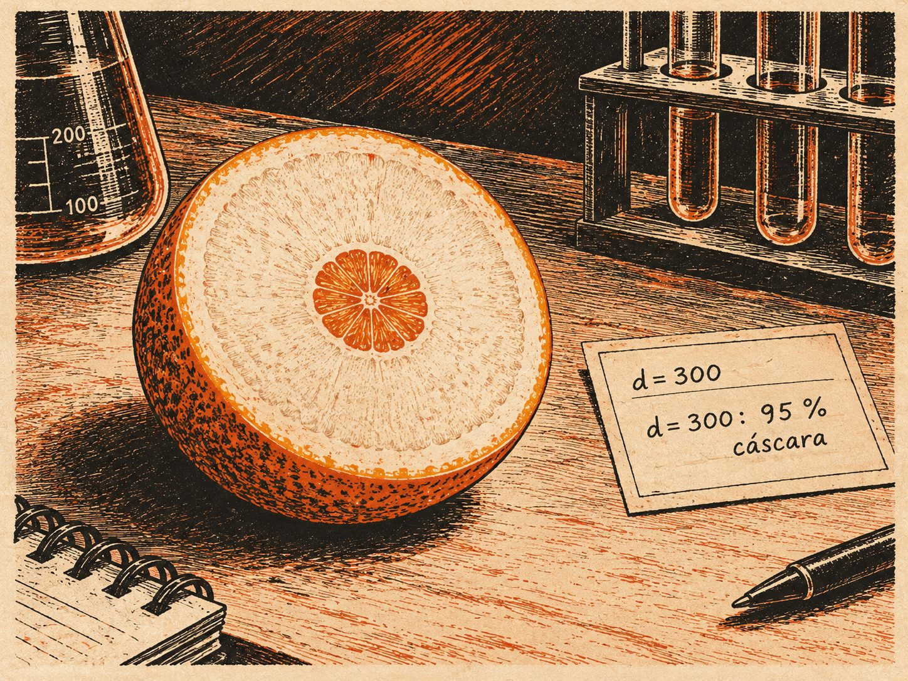

// Utilidades comunes de las simulaciones de la sección 1.1.
s11h = {
const NS = "http://www.w3.org/2000/svg";
const el = (tag, attrs = {}, padre = null) => {
const e = document.createElementNS(NS, tag);
for (const [k, v] of Object.entries(attrs)) e.setAttribute(k, v);
if (padre) padre.append(e);
return e;
};
const texto = (padre, x, y, contenido, attrs = {}) => {
const t = el("text", {x, y, "font-size": 12, fill: "var(--sim-tinta)", ...attrs}, padre);
t.textContent = contenido;
return t;
};
const deslizador = (rotulo, min, max, paso, valor, alCambiar, fmt = v => String(v)) => {
const e = html`<label class="sim-control"><span>${rotulo}</span><input type="range" min=${min} max=${max} step=${paso} value=${valor}><output></output></label>`;
const i = e.querySelector("input"), o = e.querySelector("output");
const pintar = () => { o.value = fmt(+i.value); };
i.oninput = () => { pintar(); alCambiar(); };
pintar();
return {e, get: () => +i.value, set: v => { i.value = v; pintar(); }};
};
const boton = (rotulo, f) => {
const b = html`<button type="button">${rotulo}</button>`;
b.onclick = f;
return b;
};
const fila = (rotulo, botones) => {
const d = html`<div class="sim-mem-botones"><span class="sim-mem-rot">${rotulo}</span></div>`;
d.append(...botones);
return d;
};
const punto = (svg, ev) => {
const p = svg.createSVGPoint();
p.x = ev.clientX; p.y = ev.clientY;
return p.matrixTransform(svg.getScreenCTM().inverse());
};
// Hace arrastrable un elemento del SVG; alMover recibe el punto en coordenadas del SVG.
const arrastrar = (svg, asa, alMover) => {
asa.style.cursor = "grab";
asa.addEventListener("pointerdown", ev => {
ev.preventDefault();
asa.setPointerCapture(ev.pointerId);
const mover = e => alMover(punto(svg, e));
const soltar = () => {
asa.removeEventListener("pointermove", mover);
asa.removeEventListener("pointerup", soltar);
asa.removeEventListener("pointercancel", soltar);
};
asa.addEventListener("pointermove", mover);
asa.addEventListener("pointerup", soltar);
asa.addEventListener("pointercancel", soltar);
});
};
// Puntas de flecha en los tres colores del tema, con identificadores propios de cada lienzo.
const puntas = (svg, prefijo) => {
const defs = el("defs", {}, svg);
for (const [n, c] of [["tinta", "var(--sim-tinta)"], ["acento", "var(--sim-acento)"], ["suave", "var(--sim-suave)"]]) {
const m = el("marker", {id: `${prefijo}-${n}`, viewBox: "0 0 10 10", refX: 9, refY: 5,
markerWidth: 7, markerHeight: 7, orient: "auto-start-reverse"}, defs);
el("path", {d: "M0,0 L10,5 L0,10 z", fill: c}, m);
}
};
// Cuadrícula de un plano con origen en (cx, cy), esc píxeles por unidad y rango unidades por lado.
const plano = (svg, esc, cx, cy, rango) => {
const g = el("g", {}, svg);
for (let k = -rango; k <= rango; k++) {
const w = k === 0 ? 1.3 : 0.6, c = k === 0 ? "var(--sim-suave)" : "var(--sim-regla)";
el("line", {x1: cx + k * esc, y1: cy - rango * esc, x2: cx + k * esc, y2: cy + rango * esc, stroke: c, "stroke-width": w}, g);
el("line", {x1: cx - rango * esc, y1: cy + k * esc, x2: cx + rango * esc, y2: cy + k * esc, stroke: c, "stroke-width": w}, g);
}
return g;
};
const f2 = v => (Math.abs(v) < 0.005 ? 0 : v).toFixed(2);
// Generador pseudoaleatorio con semilla (mulberry32) y normal estándar por Box–Muller.
const azar = semilla => {
let a = semilla >>> 0;
const u = () => {
a = (a + 0x6D2B79F5) >>> 0;
let t = a;
t = Math.imul(t ^ (t >>> 15), t | 1);
t ^= t + Math.imul(t ^ (t >>> 7), t | 61);
return ((t ^ (t >>> 14)) >>> 0) / 4294967296;
};
const normal = () => Math.sqrt(-2 * Math.log(1 - u())) * Math.cos(2 * Math.PI * u());
return {u, normal};
};
return {el, texto, deslizador, boton, fila, punto, arrastrar, puntas, plano, f2, azar};
}1.2 Similitud y alta dimensión
Publicada el 14 de octubre de 2026
Si cada palabra es un punto de un espacio de 300 dimensiones, ¿qué significa que dos palabras se parezcan, y cómo se encuentran, entre decenas de miles, las más parecidas a una dada? Esta sección responde con el ángulo entre vectores, que mide el parecido sin dejarse engañar por la longitud, y convierte la respuesta en un buscador. Por el camino aparece un fenómeno que desconcierta a quien solo ha dibujado en el plano: en dimensión alta, casi todos los vectores son casi perpendiculares entre sí. Al terminar, el lector sabrá buscar las vecinas de una palabra en una colección, juzgar si un coseno es mucho o poco en 300 dimensiones y leer un mapa de las palabras en el plano sabiendo qué conserva y qué no.
1.2.1 Similitud coseno y búsqueda de vecinos
En los años sesenta, primero en Harvard y después en Cornell, Gerard Salton dirigía SMART, uno de los primeros sistemas que buscaban documentos con un ordenador. Su idea, que hoy parece evidente, fue representar cada documento por la lista de cuántas veces aparece en él cada palabra: un vector con tantas coordenadas como palabras tiene el vocabulario. Una consulta era otro vector del mismo tipo, y buscar era encontrar los documentos cuyo vector se pareciera más al de la consulta (Salton et al. 1975). Pero ¿qué significa parecerse? Con el producto punto de 1.1 Vectores y producto punto, un documento muy largo, que repite muchas palabras muchas veces, puntuaría alto con casi cualquier consulta, igual que el acorde de las doce notas coincidía con todos los acordes. SMART comparaba, en cambio, el coseno del ángulo entre los dos vectores, que no depende de su longitud.
Esa es la idea de esta sub-sección. El producto punto mezcla dos cosas: el ángulo entre los vectores y su tamaño. Para decidir si dos palabras significan algo parecido, lo que interesa es hacia dónde apuntan sus embeddings, no cuánto miden; y el tamaño de un embedding depende a menudo de factores ajenos al significado, como lo frecuente que es la palabra (la práctica de 1.1 Vectores y producto punto vio que, en GloVe, las palabras raras tienen vectores más largos). Esta sub-sección separa la dirección del tamaño y la usa para resolver el problema que abría el capítulo: encontrar, en una colección, los vectores más parecidos a uno dado.
Definición 1 (Similitud coseno y distancia euclídea) La similitud coseno de dos vectores no nulos x, y \in \mathbb{R}^d es \cos(x, y) = \frac{x \cdot y}{\|x\|\, \|y\|} , el coseno del ángulo que forman. La distancia euclídea entre x e y es \|x - y\|.
Qué dice. El coseno divide el producto punto por las dos longitudes, y así se queda solo con el ángulo: es el \cos\theta de la fórmula x \cdot y = \|x\|\,\|y\|\cos\theta de 1.1 Vectores y producto punto. La distancia es la longitud de la flecha que une las dos puntas.
Ejemplo. Con el espacio de juguete de 1.1 Vectores y producto punto, el héroe h = (3, 2, 2) y la tormenta t = (-1, 3, 3) tienen producto punto 9 y normas \sqrt{17} y \sqrt{19}, así que \cos(h, t) = 9/\sqrt{323} \approx 0.50. Su distancia es \|h - t\| = \|(4, -1, -1)\| = \sqrt{18} \approx 4.24. Para el héroe y el villano, \cos(h, v) = -3/\sqrt{238} \approx -0.19.
Por la desigualdad de Cauchy–Schwarz, \cos(x, y) \in [-1, 1]: vale 1 si los vectores apuntan en el mismo sentido, 0 si son perpendiculares y -1 si apuntan en sentidos opuestos. Y, como se buscaba, no depende del tamaño:
Proposición 1 (El coseno solo ve la dirección) Para todos x, y \neq 0 y \alpha, \beta > 0, \ \cos(\alpha x, \beta y) = \cos(x, y). Si \alpha y \beta tienen signos opuestos, el coseno cambia de signo.
Qué dice. Estirar o encoger cualquiera de los dos vectores, sin darle la vuelta, no cambia el coseno: el coseno solo ve hacia dónde apuntan. Darle la vuelta a uno de los dos cambia el signo, porque convierte el acuerdo en desacuerdo.
Ejemplo. \cos(h, 2h) = (2 \cdot 17)/(\sqrt{17} \cdot 2\sqrt{17}) = 1, y \cos(h, -h) = -1. Y \cos(10\,h, t) = 90/(10\sqrt{17}\sqrt{19}) \approx 0.50, el mismo coseno que antes, aunque el producto punto se haya multiplicado por 10.
Demostración. Paso 1: el numerador. Por la bilinealidad del producto punto, (\alpha x) \cdot (\beta y) = \alpha\beta\,(x \cdot y).
Paso 2: el denominador. Por la homogeneidad de la norma, \|\alpha x\|\,\|\beta y\| = |\alpha|\,|\beta|\,\|x\|\,\|y\|.
Paso 3: el cociente. Dividiendo, \cos(\alpha x, \beta y) = \dfrac{\alpha\beta}{|\alpha|\,|\beta|}\cos(x, y). El factor \alpha\beta/(|\alpha||\beta|) vale 1 si \alpha y \beta tienen el mismo signo y -1 si lo tienen opuesto.
En consecuencia, el coseno entre x e y es el producto punto de sus versiones normalizadas, \hat{x} = x / \|x\| e \hat{y} = y / \|y\|, que tienen norma 1 y viven en la esfera unidad S^{d-1} = \{u \in \mathbb{R}^d : \|u\| = 1\}. Sobre la esfera, el coseno y la distancia, que en general miden cosas distintas, cuentan la misma historia:
Proposición 2 (Coseno y distancia en la esfera) Si \|u\| = \|v\| = 1, entonces \|u - v\|^2 = 2 - 2 \cos(u, v) .
Qué dice. Entre vectores de longitud 1, la distancia y el coseno son dos maneras de decir lo mismo: cuanto mayor el coseno, menor la distancia, y una se calcula a partir de la otra. Los extremos: vectores iguales (coseno 1) están a distancia 0; perpendiculares (coseno 0), a distancia \sqrt{2}; opuestos (coseno -1), a distancia 2.
Ejemplo. Con u = (1, 0) y v = (0.6, 0.8), que miden 1, \cos(u, v) = 0.6 y \|u - v\|^2 = 0.4^2 + 0.8^2 = 0.16 + 0.64 = 0.8 = 2 - 2 \cdot 0.6.
Demostración. Paso 1. Se desarrolla el cuadrado de la distancia con la bilinealidad: \|u - v\|^2 = (u - v) \cdot (u - v) = \|u\|^2 - 2\, u \cdot v + \|v\|^2.
Paso 2. Como \|u\| = \|v\| = 1, queda 2 - 2\, u \cdot v, y u \cdot v = \cos(u, v) porque el denominador del coseno vale 1 \cdot 1.
La distancia entre dos vectores normalizados es, por tanto, una función estrictamente decreciente del coseno: cuanto más parecidas las direcciones, más cerca los puntos. Puede comprobarlo en la simulación siguiente.
Simulación 1.2.1
Qué representa cada mando. Las flechas son los vectores x (en color) e y (en negro) del plano \mathbb{R}^2; se mueven arrastrando su punta, con coordenadas entre -4 y 4. El arco marca el ángulo \theta y la línea de puntos une las dos puntas: su longitud es la distancia \|x - y\|. La casilla normalizar sustituye cada vector por su versión normalizada \hat{x} = x / \|x\|, que queda sobre la circunferencia unidad (de trazos), y añade a la lectura las dos cantidades de la Proposición 2. Los botones Pruebe colocan los vectores en los casos que comenta el texto.
Antes de tocar. Si estira y hasta el doble de su longitud, sin cambiar su dirección, ¿qué les pasa al coseno y al producto punto?
- Los dos se duplican.
- El coseno no cambia y el producto punto se duplica.
- El coseno se duplica y el producto punto no cambia.
- Ninguno de los dos cambia.
Lo que pasa. El coseno no cambia y el producto punto se duplica: x \cdot 2y = 2\,(x \cdot y), mientras que \cos(x, 2y) = \cos(x, y) por la Proposición 1. Compruébelo arrastrando la punta de y a lo largo de su propia recta.
Arrastre las puntas de x e y. El producto punto cambia con el tamaño de los vectores; el coseno, solo con el ángulo.
Empiece con Mismo sentido, distinto tamaño: el coseno vale exactamente 1 aunque un vector mida tres veces el otro; el producto punto, en cambio, depende de cuánto midan. Con Perpendiculares y Opuestos, el coseno vale 0 y -1. El caso más instructivo es Un vector muy largo: dos vectores que forman un ángulo de unos 46° tienen un producto punto de 4.41, mayor que el 3.75 de los vectores alineados de Mismo sentido, porque el tamaño compensa el ángulo. Active después normalizar y arrastre las puntas: las dos últimas cifras coinciden siempre, como afirma la proposición.
La búsqueda de vecinos. Con estas herramientas, el problema del principio se formula con precisión. Se tiene una colección de N vectores x_1, \dots, x_N \in \mathbb{R}^d (los embeddings de un vocabulario, o los de un millón de documentos) y una consulta q, y se buscan los k elementos de la colección más parecidos a q.
Definición 2 (Los k mejores) Dada una puntuación s : \{1, \dots, N\} \to \mathbb{R}, el conjunto top-k está formado por los k índices de mayor puntuación, ordenados de mayor a menor; los empates se deshacen a favor del índice menor. Se habla de top-k por coseno cuando s(i) = \cos(x_i, q) y de top-k por producto punto cuando s(i) = x_i \cdot q.
Ejemplo. Con las puntuaciones s = (0.3, 0.9, 0.9, 0.1, 0.5) de cinco elementos, el top-2 es (2, 3): los dos tienen 0.9, y el empate se deshace a favor del índice menor, el 2. El top-3 añade el elemento 5, con 0.5.
El convenio de desempate solo sirve para que el conjunto esté siempre bien definido; con datos reales, los empates exactos son rarísimos. Las dos proposiciones anteriores tienen ahora una consecuencia práctica inmediata.
Corolario 1 (Coseno y vecinos más cercanos) Si todos los vectores de la colección y la consulta tienen norma 1, el top-k por coseno, el top-k por producto punto y los k vecinos euclídeos más cercanos a q son el mismo conjunto, en el mismo orden.
Qué dice. Si se normaliza todo de antemano, da igual buscar por coseno, por producto punto o por cercanía: los tres criterios eligen los mismos vecinos en el mismo orden. Por eso los sistemas reales normalizan una vez y después usan el producto punto, que es lo más rápido de calcular.
Demostración. Paso 1: producto punto igual a coseno. Con normas iguales a 1, x_i \cdot q = \|x_i\|\,\|q\|\cos(x_i, q) = \cos(x_i, q): las dos puntuaciones son la misma.
Paso 2: distancia y coseno. Por la Proposición 2, \|x_i - q\|^2 = 2 - 2\cos(x_i, q), una función estrictamente decreciente del coseno. Ordenar de mayor a menor coseno es, por tanto, ordenar de menor a mayor distancia, con los mismos empates.
Si los vectores no están normalizados, el producto punto y el coseno pueden discrepar, y la discrepancia viene solo de las normas de la colección:
Proposición 3 (Cuándo coinciden el producto punto y el coseno) Si todos los x_i tienen la misma norma r > 0, el top-k por producto punto coincide con el top-k por coseno, sea cual sea la norma de la consulta. Si las normas difieren, pueden no coincidir.
Qué dice. Lo único que puede hacer que el producto punto y el coseno elijan vecinos distintos es que los vectores de la colección midan distinto. Es el problema de los documentos largos de Salton, en forma de teorema.
Demostración. Paso 1: normas iguales. Si todos los x_i miden r, entonces x_i \cdot q = \|x_i\|\,\|q\|\cos(x_i, q) = r\,\|q\|\cos(x_i, q): cada puntuación es el coseno multiplicado por la misma constante positiva r\,\|q\|, que no altera el orden.
Paso 2: normas distintas. Basta un contraejemplo, «el vector largo que apunta peor»: q = (1, 0), x_1 = (1, 0) y x_2 = (3, 3). El coseno prefiere x_1 (1 frente a 3/\sqrt{18} \approx 0.71) y el producto punto prefiere x_2 (3 frente a 1), porque x_2 mide \sqrt{18} \approx 4.24 y su tamaño compensa el ángulo de 45°.
Observe que la norma de la consulta no importa nunca: multiplicar q por un número positivo multiplica todas las puntuaciones por ese número y no cambia el orden. Lo que puede apartar el producto punto del coseno son las normas de la colección, porque el producto punto favorece a los vectores largos aunque apunten peor. La simulación siguiente lo muestra con una nube de 30 puntos.
Simulación 1.2.2
Qué representa cada mando. Los puntos grises son la colección x_1, \dots, x_{30} en \mathbb{R}^2; la flecha es la consulta q, que se mueve arrastrando su punta. El deslizador fija k, el número de vecinos buscados. Los puntos rellenos de color forman el top-k por coseno; los que llevan un anillo negro, el top-k por producto punto; un punto que está en los dos tiene relleno y anillo. Igualar normas lleva todos los puntos de la colección a una misma circunferencia, sin cambiar su dirección, y Normas variadas los devuelve a su sitio. Nuevo sorteo genera otra colección.
Antes de tocar. Con las normas variadas, ¿qué puntos tenderá a elegir el top-k por producto punto, comparado con el top-k por coseno?
- Los mismos que el coseno.
- Los más cercanos al origen.
- Los más alejados del origen que estén del lado de q, aunque apunten peor.
- Puntos al azar, sin relación con q.
Lo que pasa. Los más alejados del lado de q: el producto punto premia el tamaño, y un punto largo compensa con su longitud un ángulo peor. Es la Proposición 3, y es lo que verá con los anillos negros.
Relleno de color: top-k por coseno. Anillo negro: top-k por producto punto. La línea de trazos marca la dirección de q.
Con las normas variadas, los anillos tienden a irse a los puntos más alejados del origen que están del lado de q, aunque su dirección se aparte bastante de la de q; los rellenos, en cambio, se agrupan alrededor de la línea de trazos. Pulse Igualar normas: anillos y rellenos coinciden siempre, como afirma la Proposición 3. Pruebe después Consulta corta y Consulta larga, que apuntan en la misma dirección: ningún vecino cambia, ni por coseno ni por producto punto, porque la norma de la consulta no altera ningún orden.
El algoritmo y su costo. La búsqueda por coseno se programa en dos pasos. Primero, una sola vez, se normaliza la colección: se divide cada x_i por su norma y los resultados se apilan como filas de una matriz \hat{X} \in \mathbb{R}^{N \times d}. Después, para cada consulta, se normaliza q, se calcula el vector de puntuaciones s = \hat{X} \hat{q} \in \mathbb{R}^N, cuya entrada i es el producto punto de la fila i con \hat{q}, es decir, \cos(x_i, q), y se seleccionan sus k entradas mayores. El producto de la matriz por el vector cuesta, por la cuenta de 0.3 Medir sin engañarse, unas 2Nd operaciones, y la selección se hace en un tiempo proporcional a N (más un término que depende de k y es despreciable si k es pequeño). Para un millón de documentos con embeddings de dimensión 768, cada consulta exige unos 1.5 \times 10^{9} operaciones, una fracción de segundo. El costo crece linealmente con el tamaño de la colección, lo que es razonable hasta varios millones de elementos; para colecciones de miles de millones hacen falta índices que encuentran los vecinos de forma aproximada sin compararlos todos, y que se estudian en 32.3 Recuperación y memoriamás adelante en el libro.
El programa siguiente hace la búsqueda en una colección inventada de seis vectores de \mathbb{R}^3, con nombres de una letra, y compara los dos criterios. Tiene dos detalles de PyTorch que se explican más adelante: E / E.norm(dim=1, keepdim=True) divide cada fila de E por su norma, gracias a la regla del broadcasting de 1.4 Tensores, broadcasting y einsum, y el operador @ es el producto de matrices (aquí, de la matriz E por el vector q). El método topk devuelve las k mayores entradas de un vector y sus posiciones. Guarde el programa como vecinos.py en su carpeta de programas de la sección y ejecútelo con python vecinos.py:
# archivo: vecinos.py
import torch
# Una colección inventada de seis vectores de R^3 y una consulta q.
nombres = ["a", "b", "c", "d", "e", "f"]
E = torch.tensor([[1.0, 0.2, 0.0],
[4.0, 4.0, 0.0],
[0.9, 0.0, 0.3],
[0.0, 1.0, 0.0],
[-1.0, 0.1, 0.0],
[0.5, 0.5, 2.0]])
q = torch.tensor([1.0, 0.0, 0.0])
puntos = E @ q # el producto punto de cada fila con q
En = E / E.norm(dim=1, keepdim=True) # cada fila dividida por su norma
cosenos = En @ (q / q.norm())
for n, p, c in zip(nombres, puntos, cosenos):
print(f"{n}: producto punto {p:6.2f} coseno {c:6.2f}")
k = 3
print("top-3 por producto punto:", [nombres[i] for i in puntos.topk(k).indices])
print("top-3 por coseno: ", [nombres[i] for i in cosenos.topk(k).indices])Lo que debe ver. Exactamente esto, en cualquier máquina, porque el programa no tiene nada de aleatorio:
a: producto punto 1.00 coseno 0.98
b: producto punto 4.00 coseno 0.71
c: producto punto 0.90 coseno 0.95
d: producto punto 0.00 coseno 0.00
e: producto punto -1.00 coseno -1.00
f: producto punto 0.50 coseno 0.24
top-3 por producto punto: ['b', 'a', 'c']
top-3 por coseno: ['a', 'c', 'b']El vector b es el más largo de la colección y gana por producto punto aunque forme 45° con la consulta; por coseno queda tercero, detrás de a y c, que apuntan casi exactamente como q. El vector e apunta casi en sentido opuesto a la consulta y obtiene el coseno mínimo, -0.995, que con dos decimales se imprime como -1.00. Si en lugar de esto aparece un error que dice No module named 'torch', el entorno del laboratorio no está activo: las guías de 0.2 El laboratorio en 8 GB explican cómo activarlo.
Jugar con la búsqueda. Hay juegos de palabras en línea, como Contexto, que consisten en adivinar una palabra secreta sabiendo solo cuánto se parece a ella cada intento, según un modelo de IA. La simulación siguiente es una versión con los embeddings en español de la práctica de esta sección: 4 566 palabras, cada una con sus 300 números. El puesto de cada intento es su posición en el top-k por coseno con la palabra secreta.
Simulación 1.2.3
Qué representa cada mando. El juego elige en secreto una palabra entre 4 566 palabras españolas, cada una con su embedding real de 300 dimensiones. Escriba una palabra y pulse Probar: el juego calcula su coseno con la secreta y su puesto en la lista de todas las palabras ordenadas por coseno con la secreta (el puesto 1 es la propia secreta). Los intentos quedan ordenados por puesto. Pista revela una palabra con la mitad del puesto de su mejor intento; Me rindo muestra la secreta y sus diez vecinas más cercanas; Nueva palabra empieza otra partida.
Antes de jugar. Entre las 4 566 palabras del juego, ¿cuál cree que es la más parecida, por coseno, a «invierno»?
- «frío».
- «nieve».
- «verano».
- «estación».
Lo que pasa. «verano», con un coseno de 0.86, seguida de «otoño» y «primavera»; «frío» queda cuarta y «nieve», quinta. Para un embedding, parecido no quiere decir sinónimo: significa que las dos palabras aparecen en el mismo tipo de frases. Compruébelo con Me rindo en una partida cuya secreta sea «invierno», o búsquela en el mapa de la 1.2.2 La geometría de la alta dimensión.
El puesto de una palabra es su posición en el top-N por coseno con la palabra secreta: el mismo cálculo de la búsqueda de vecinos, con la secreta como consulta.
Al jugar se descubre qué significa parecido para un embedding. Las palabras de puestos bajos son de la misma familia de uso, no necesariamente sinónimos: las vecinas de «invierno» son «verano», «otoño» y «primavera», que nombran cosas distintas pero aparecen en las mismas frases. Un detalle técnico explica por qué el juego cabe en la página: cada vector se guarda con 8 bits por coordenada en lugar de 32. Dividir un vector por un número no cambia ningún coseno, así que basta con guardar su dirección, y el redondeo a 8 bits cambia los cosenos en menos de 0.01.
Medio siglo después de SMART, la receta de Salton sigue intacta: vectores, coseno, los k mejores. Lo que cambió es de dónde salen los vectores. Salton contaba palabras, de modo que dos documentos sin palabras en común eran perpendiculares aunque hablaran de lo mismo; los embeddings colocan cerca «coche» y «automóvil» porque se usan en las mismas frases. Esta búsqueda, con colecciones reales en lugar de seis vectores inventados, está detrás de muchos sistemas de 2017–2026: los buscadores que encuentran documentos por su significado y no por sus palabras exactas, los sistemas que relacionan imágenes con descripciones en texto (24.1 Aprendizaje contrastivo y CLIPmás adelante en el libro) y los asistentes que, antes de responder, recuperan de una biblioteca los fragmentos más parecidos a la pregunta (32.3 Recuperación y memoriamás adelante en el libro). La práctica de esta sección la aplica a los embeddings de decenas de miles de palabras españolas.
Lo que el lector ya sabe: medir el parecido de dos vectores con el coseno, que ignora su tamaño; que, sobre vectores normalizados, el coseno, el producto punto y la distancia ordenan igual; y buscar los k vecinos de una consulta con un producto de matriz por vector y una selección, a un costo de unas 2Nd operaciones.
1.2.2 La geometría de la alta dimensión
Empecemos por una naranja. En el espacio de tres dimensiones, la cáscara de un milímetro de una naranja de diez centímetros de radio guarda apenas un 3 % de su volumen: casi toda la naranja es pulpa. Pero el volumen de una bola de radio r en \mathbb{R}^d es proporcional a r^d, de modo que la fracción del volumen que queda en la cáscara exterior, entre los radios 0.99 y 1, es 1 - 0.99^d. Para d = 3 vale un 3 %; para d = 300, un 95 %. Una naranja de 300 dimensiones es casi toda cáscara. Rarezas así son la norma en dimensión alta, y la búsqueda de vecinos depende de ellas.
Tienen fama de maldición. En 1957, el matemático Richard Bellman, que estudiaba cómo tomar decisiones óptimas en varias etapas, se encontró con que cada variable nueva multiplica el trabajo: con diez valores posibles por variable y diez variables, hay que examinar 10^{10} combinaciones, que a una por segundo llevarían más de tres siglos. Lo llamó la maldición de la dimensión (Bellman 1957), y el nombre se quedó. Esta sub-sección cuenta la otra cara de la misma geometría: la que hace que, en dimensión alta, buscar parecidos funcione sorprendentemente bien.

Supongamos que el embedding de «gato» y el de «teclado», dos vectores de \mathbb{R}^{300}, tienen un coseno de 0.3. ¿Es mucho o poco? En el plano, un coseno de 0.3 corresponde a un ángulo de unos 73°, y no parece decir gran cosa. La intuición del plano, sin embargo, engaña en dimensión alta. Esta sub-sección muestra que en \mathbb{R}^{300} dos direcciones elegidas al azar forman casi siempre un ángulo muy próximo a 90°, de modo que un coseno de 0.3 es una señal fortísima. Es el fenómeno que hace funcionar la búsqueda por coseno, y su cálculo de fondo reaparecerá en el Transformer.
Qué es una dirección al azar. Para hablar de vectores «al azar» hay que fijar una distribución. La natural para las direcciones es la uniforme en la esfera, que se construye con la distribución normal.
Definición 3 (Dirección uniforme) Sea g = (g_1, \dots, g_d) un vector de coordenadas independientes con distribución normal estándar \mathcal{N}(0, 1). El vector u = g / \|g\| (bien definido, porque g \neq 0 con probabilidad 1) se llama dirección uniforme en la esfera S^{d-1}.
Qué dice. Para elegir una dirección «sin preferencias», se sortea cada coordenada por separado con la campana de Gauss y se divide el vector por su longitud. Lo que queda es un punto de la esfera unidad, y la proposición siguiente lo justifica: ninguna dirección sale más que otra.
Ejemplo. En el plano, si el sorteo da g = (1.2, -0.5), entonces \|g\| = 1.3 y u = (0.92, -0.38), un punto de la circunferencia unidad.
La densidad de g, (2\pi)^{-d/2} e^{-\|g\|^2/2}, depende solo de la norma de g. Por eso, cualquier transformación lineal que conserve las longitudes y los volúmenes, como un giro, una simetría o una permutación de las coordenadas, deja invariante la distribución de g, y también la de u: ninguna dirección está privilegiada. Las transformaciones de ese tipo, las transformaciones ortogonales, se estudian en 1.6 Grupos, rotaciones y equivarianciamás adelante en este capítulo; aquí basta con esta propiedad.
Proposición 4 (Casi ortogonalidad) Sea u una dirección uniforme en S^{d-1} y v \in S^{d-1} un vector fijo. Entonces \mathbb{E}[u \cdot v] = 0, \qquad \operatorname{Var}(u \cdot v) = \frac{1}{d} . En consecuencia, para todo \varepsilon > 0, \ \Pr\bigl(|\cos(u, v)| > \varepsilon\bigr) \le \dfrac{1}{d \varepsilon^2}.
Qué dice. El coseno entre una dirección al azar y cualquier dirección fija vale 0 en promedio, y se aparta de 0 típicamente en 1/\sqrt{d}, la raíz de la varianza. La última frase traduce eso a probabilidades con la desigualdad de Chebyshev: un coseno mayor que \varepsilon en valor absoluto es tanto más raro cuanto mayor es la dimensión.
Ejemplo. En dimensión d = 300, la desviación típica del coseno es 1/\sqrt{300} \approx 0.058. Un coseno de 0.3 está a más de cinco desviaciones típicas, y Chebyshev ya dice que su probabilidad es menor que 1/(300 \cdot 0.3^2) \approx 0.037.
Demostración. La estrategia es usar la simetría de la esfera tres veces: para reducir el problema a una coordenada, para obtener la media y para obtener la varianza.
Paso 1: basta mirar la primera coordenada. Sea Q una transformación ortogonal (un giro o una simetría) que lleva v a e_1. Como Q conserva el producto punto, u \cdot v = (Qu) \cdot (Qv) = (Qu) \cdot e_1, y Qu tiene la misma distribución que u. Luego u \cdot v tiene la misma distribución que la primera coordenada u_1.
Paso 2: la media es 0. El cambio g \mapsto -g no altera la distribución de g, así que la de u_1 es simétrica respecto de 0, y \mathbb{E}[u_1] = 0.
Paso 3: la varianza es 1/d. Permutar las coordenadas tampoco altera la distribución, así que u_1, \dots, u_d tienen todas la misma. Como u mide 1, \sum_i u_i^2 = 1; tomando esperanzas, d\, \mathbb{E}[u_1^2] = 1, y \operatorname{Var}(u_1) = \mathbb{E}[u_1^2] - 0 = 1/d.
Paso 4: la cota. Es la desigualdad de Chebyshev, \Pr(|X - \mathbb{E}X| > \varepsilon) \le \operatorname{Var}X/\varepsilon^2, aplicada a X = u \cdot v = \cos(u, v).
Si v también es una dirección uniforme, independiente de u, el resultado es el mismo: basta condicionar a v. La proposición dice que el coseno entre dos direcciones al azar vale típicamente \pm 1/\sqrt{d}: unos \pm 0.058 en dimensión 300, \pm 0.036 en 768 y \pm 0.016 en 4096. Volviendo a la pregunta inicial, un coseno de 0.3 en dimensión 300 está a más de cinco desviaciones típicas de lo que da el azar. La cota de Chebyshev ya asegura que esa coincidencia tiene una probabilidad menor que 1/(300 \cdot 0.09) \approx 0.04, y la probabilidad real es muchísimo menor, del orden de 10^{-7}, porque la distribución de u \cdot v se parece mucho a una normal (algo que 3.1 Distribuciones y muestreodentro de 2 capítulos permite precisar).
La simulación siguiente sortea direcciones al azar y dibuja el histograma de sus cosenos con una de ellas fija, junto a la densidad exacta de u \cdot v, que es proporcional a (1 - t^2)^{(d-3)/2} en [-1, 1].
Simulación 1.2.4
Qué representa cada mando. El deslizador d elige la dimensión del espacio, de 2 a 4096; los valores 300, 768 y 4096 son anchuras típicas de embeddings y modelos de lenguaje. En cada sorteo se generan 3000 direcciones uniformes u y se calcula su coseno con una dirección fija v; las barras son el histograma de esos 3000 cosenos y la curva es su densidad exacta. Nuevo sorteo repite el experimento con otras direcciones. Debajo se leen la varianza observada, que debe acercarse a 1/d, y la fracción de cosenos mayores que 0.3 en valor absoluto.
Antes de tocar. En dimensión 300, de cada millón de pares de direcciones al azar, ¿cuántos tienen un coseno mayor que 0.3 en valor absoluto?
- Unos 300 000: es un ángulo de 73°, nada raro.
- Unos 37 000, la cota de Chebyshev.
- Menos de uno.
- Exactamente ninguno: es imposible.
Lo que pasa. Menos de uno: la probabilidad exacta es del orden de 10^{-7}, y en los 3 000 cosenos de cada sorteo no aparece ninguno. No es imposible, solo rarísimo. Chebyshev da una cota cierta pero muy pobre; la cota exponencial de 1.2.3 Demostraciones formales y justificaciones se acerca mucho más a la realidad.
Por la invariancia ante giros, el coseno de u con un v fijo se distribuye como la primera coordenada de u, y así se calcula.
Empiece por El plano: los cosenos se reparten por todo [-1, 1] y se acumulan cerca de los extremos, porque en el plano dos direcciones al azar están alineadas con frecuencia. El espacio da una sorpresa: en \mathbb{R}^3 el coseno es exactamente uniforme en [-1, 1] (es el teorema de Arquímedes sobre la esfera y el cilindro). A partir de ahí, cada vez que d se multiplica por 100 la anchura del histograma se divide por 10, como predice la desviación típica 1/\sqrt{d}. Con Un embedding la fracción de cosenos mayores que 0.3 ya es prácticamente nula, y con Un modelo grande el histograma es una aguja alrededor de 0: en dimensión 4096, todas las direcciones al azar son casi perpendiculares entre sí.

El programa siguiente hace el mismo experimento con PyTorch, con 20 000 pares de vectores al azar para cada dimensión. Guárdelo como casi_ortogonales.py y ejecútelo con python casi_ortogonales.py:
# archivo: casi_ortogonales.py
import torch
torch.manual_seed(0)
pares = 20_000
print(" d media varianza d × varianza máximo |cos|")
for d in [2, 10, 100, 300, 1000]:
u = torch.randn(pares, d) # 20 000 vectores al azar de R^d...
v = torch.randn(pares, d) # ... y otros 20 000, emparejados con ellos
cos = (u * v).sum(dim=1) / (u.norm(dim=1) * v.norm(dim=1))
print(f"{d:5d} {cos.mean():+.4f} {cos.var():.5f} {d * cos.var():.3f} {cos.abs().max():.3f}")Cada fila de u y de v es un vector de coordenadas normales independientes, y la línea de cos calcula a la vez los 20 000 cosenos, uno por fila: (u * v).sum(dim=1) multiplica coordenada a coordenada y suma a lo largo de cada fila, y u.norm(dim=1) da la norma de cada fila. El coseno no cambia al normalizar, así que no hace falta dividir antes por la norma.
Lo que debe ver. Una tabla como esta, que en la máquina del laboratorio sale idéntica en cada ejecución porque la semilla está fijada:
d media varianza d × varianza máximo |cos|
2 +0.0044 0.50205 1.004 1.000
10 -0.0055 0.10002 1.000 0.916
100 +0.0013 0.00992 0.992 0.408
300 +0.0003 0.00330 0.990 0.241
1000 -0.0002 0.00099 0.994 0.135Con otra versión de PyTorch o en otro procesador, los números concretos pueden cambiar, porque cambia la sucesión de números al azar; lo que debe repetirse es la estructura: medias cercanas a 0, una columna d × varianza cercana a 1 en todas las filas, que es la Proposición 4 medida, y un máximo de |\cos| que se encoge con la dimensión. Incluso el máximo entre 20 000 pares, en dimensión 300, queda por debajo de 0.25.
También la longitud se concentra. El mismo fenómeno tiene una segunda cara, que afecta a la norma de los vectores en lugar de a sus ángulos.
Proposición 5 (Concentración de la norma) Si g \in \mathbb{R}^d tiene coordenadas independientes \mathcal{N}(0, 1), entonces \mathbb{E}\|g\|^2 = d y \operatorname{Var}\|g\|^2 = 2d. En consecuencia, para todo \varepsilon > 0, \Pr\left( \left| \frac{\|g\|^2}{d} - 1 \right| > \varepsilon \right) \le \frac{2}{d \varepsilon^2} .
Qué dice. La longitud al cuadrado de un vector de coordenadas normales es casi siempre muy parecida a d, con una dispersión relativa que se reduce como 1/\sqrt{d}. Dicho de otra manera, el vector mide casi exactamente \sqrt{d}.
Ejemplo. Con d = 300, \|g\|^2 tiene media 300 y desviación típica \sqrt{600} \approx 24.5: casi siempre entre unos 250 y 350, de modo que \|g\| queda casi siempre entre 15.8 y 18.7, alrededor de \sqrt{300} \approx 17.3.
Demostración. Paso 1: media. \|g\|^2 = \sum_i g_i^2 es una suma de d variables independientes con \mathbb{E}[g_i^2] = 1 (la varianza de la normal estándar), así que su media es d.
Paso 2: varianza. Cada sumando tiene varianza \mathbb{E}[g_i^4] - (\mathbb{E}[g_i^2])^2 = 3 - 1 = 2, porque el cuarto momento de la normal estándar vale 3. Al ser independientes, las varianzas se suman: \operatorname{Var}\|g\|^2 = 2d.
Paso 3: la cota. Chebyshev aplicada a \|g\|^2/d, de media 1 y varianza 2d/d^2 = 2/d.
Un vector de coordenadas normales mide, por tanto, casi exactamente \sqrt{d}, con fluctuaciones relativas del orden de 1/\sqrt{d}. Es otra rareza para la intuición del plano: la densidad de g es máxima en el origen y, sin embargo, en dimensión alta casi toda la probabilidad está en una capa delgada alrededor de la esfera de radio \sqrt{d}, porque cerca del origen hay muy poco volumen. Este tamaño típico, \sqrt{d}, aparecerá a menudo en el libro, por ejemplo para fijar la escala de los parámetros iniciales de una red (5.1 Perceptrones multicapa e inicializaciónmás adelante en este tomo). Y el mismo cálculo de varianza, aplicado al producto punto de dos vectores sin normalizar, explica un factor de escala del mecanismo de atención del Transformer, que se deriva en 12.1 Atención de producto punto escaladomás adelante en el libro.
Muchas más direcciones que dimensiones. En \mathbb{R}^d caben como mucho d direcciones exactamente perpendiculares entre sí. Pero si se admite una pequeña tolerancia, la proposición sugiere que caben muchas más: basta tomar direcciones al azar, que serán casi perpendiculares entre sí. Esta abundancia de direcciones casi independientes es lo que permite a un modelo guardar en un espacio de unos miles de dimensiones muchos más conceptos que dimensiones, un fenómeno llamado superposición que se estudia en 33.1 Interpretabilidad mecanísticamás adelante en el libro.
NotaPara profundizar: cuántas direcciones casi perpendiculares caben
La cota de Chebyshev es pobre: solo garantiza que unas \varepsilon\sqrt{d} direcciones al azar tienen, con probabilidad razonable, todos sus cosenos mutuos por debajo de \varepsilon (el Ejercicio 5 hace la cuenta). La realidad es mucho mejor. Para una dirección uniforme se cumple la cota exponencial \Pr(|u \cdot v| > \varepsilon) \le 2 e^{-d\varepsilon^2/2}, y, sumando sobre todos los pares, N direcciones al azar tienen todos sus cosenos menores que \varepsilon con probabilidad positiva siempre que N^2 e^{-d \varepsilon^2/2} < 1, es decir, hasta N \approx e^{d \varepsilon^2 / 4} direcciones: un número que crece exponencialmente con la dimensión. El mismo argumento demuestra el lema de Johnson–Lindenstrauss: N puntos cualesquiera de un espacio de dimensión enorme se pueden llevar a un espacio de dimensión del orden de (\log N) / \varepsilon^2 conservando todas sus distancias salvo un factor 1 \pm \varepsilon. Ambas cosas dicen que, en dimensión alta, el espacio es mucho más «ancho» de lo que sugiere su número de ejes.
Un mapa de 300 dimensiones. Si las direcciones al azar son casi perpendiculares, ¿qué forma tiene la nube de los embeddings reales? En \mathbb{R}^{300} no se puede dibujar, y ninguna proyección al plano conserva todas las distancias: hay demasiadas direcciones casi independientes para tan poco papel. Lo que sí se puede es pedirle al dibujo que conserve lo más importante para una búsqueda, quién es vecino de quién. Es lo que hace UMAP, un método de 2018 que construye el mapa a partir de las vecindades de cada punto. No es el único: t-SNE (2008) pone el acento en los vecinos más cercanos, y TriMap y PaCMAP (2019 y 2021) intentan conservar además la disposición de las regiones lejanas, mientras que PCA, la proyección lineal de toda la vida, es la línea base con la que se comparan todos. Ninguno gana en todo, y la simulación permite comprobarlo con estos mismos datos. Su teoría se estudia en 3.7 Mapas y grupos en alta dimensión: t-SNE, UMAP y HDBSCANdentro de 2 capítulos; aquí se usan como instrumentos, con su ficha en la Caja de herramientas.
Simulación 1.2.5
Qué representa cada mando. Cada punto es una de las 4 566 palabras del juego anterior, colocada en el plano por el método que elija en Método: UMAP, t-SNE, PaCMAP, TriMap o PCA. Todos intentan que las palabras con embeddings parecidos queden cerca también en el dibujo, y bajo el mapa se leen tres medidas de lo que conserva el elegido, calculadas con los 300 números completos: vecindades, la fracción de las diez vecinas de cada palabra que el mapa no confunde con impostoras (1 sería perfecto); tripletes, la fracción de tríos de palabras al azar en los que el mapa respeta cuál de dos está más cerca de la tercera (0.5 sería el azar); y grupos, cuánto se parece la disposición de los 40 grupos en el mapa a la que tienen en 300 dimensiones (una correlación: 1 sería idéntica). Al pasar el puntero se lee la palabra. Buscar resalta una palabra y sus diez vecinas por coseno, calculadas con los 300 números completos, no con el dibujo. El selector de grupo resalta uno de los 40 grupos que encuentra el algoritmo k-means de 1.3 Proyecciones y matrices, nombrado por sus palabras más típicas; Todos los grupos los colorea a la vez, y los rótulos en cursiva, que se ocultan con Rótulos de los grupos, marcan el centro de cada grupo con su palabra más típica.
Antes de tocar. De los cinco métodos, ¿cuál cree que conserva mejor las diez vecinas de cada palabra?
- UMAP, el más usado.
- t-SNE.
- PCA, porque es una proyección exacta.
- Los cinco por igual.
Lo que pasa. Con estas palabras, t-SNE: conserva 0.94, frente a 0.88 de UMAP y 0.70 de PCA. Que un método sea el más usado no lo hace el mejor para todo, y PCA, que no deforma nada, pierde muchas vecindades porque en el plano solo cabe una pequeña parte de la información. La tabla bajo el mapa da las tres medidas de cada método.
Mapas de dos dimensiones de 4 566 embeddings de 300 dimensiones, con cinco métodos. Las distancias del dibujo son aproximadas; las vecinas resaltadas y las tres medidas se calculan con los vectores completos.
Busque perro: sus vecinas por coseno, «gato», «caballo», «lobo», «oso», forman una isla de animales. lunes aparece rodeado de los demás días de la semana. Con Todos los grupos se ven las regiones que encuentra el algoritmo k-means de 1.3 Proyecciones y matrices, cada una con un color. Y fíjese en el aviso que aparece a veces bajo la búsqueda: vecinas en 300 dimensiones que el mapa ha dejado lejos. No es un error del programa. Un dibujo en el plano no puede conservar todas las vecindades de un espacio tan ancho; la práctica mide que el de UMAP conserva alrededor del 88 % de ellas.
Ahora cambie de Método con perro buscado y mire la tabla. Con estos datos, t-SNE es el que mejor conserva las vecinas (0.94): casi ninguna queda lejos. TriMap y t-SNE colocan mejor los grupos entre sí. PCA, el único lineal, es el que peor conserva las vecinas y, sin embargo, el que mejor respeta el orden de las distancias en tríos al azar: deforma poco lo grande y mucho lo pequeño. UMAP, el método más usado, es el segundo en vecinas y de los últimos en lo global, como PaCMAP. La lección vale para cualquier mapa de datos de alta dimensión: cada método miente de una manera distinta, y la única forma de saber cuál conviene es medir, con los datos que se tienen, lo que se quiere conservar. Las clasificaciones publicadas cambian de un conjunto de datos a otro, y la de estas palabras no tiene por qué coincidir con ninguna.
La maldición de Bellman y la bendición de esta sub-sección son la misma geometría vista desde dos lados. Explorar un espacio de muchas dimensiones casilla a casilla es imposible, porque hay demasiado sitio; pero ese mismo exceso de sitio hace que las direcciones sin relación queden casi perpendiculares, y que una coincidencia de unas décimas destaque como un faro. En 1984, William Johnson y Joram Lindenstrauss demostraron una de sus consecuencias más útiles, el lema de la caja anterior; hoy es una herramienta diaria para comprimir datos sin perder sus distancias.
Lo que el lector ya sabe: en dimensión d, dos direcciones al azar tienen un coseno de media 0 y varianza 1/d, y un vector de coordenadas normales mide casi exactamente \sqrt{d}; por eso, en un espacio de embeddings, un coseno de unas décimas ya es una señal clara de parecido; y un mapa en el plano de esos embeddings conserva unas cosas y pierde otras, según el método.
1.2.3 Demostraciones formales y justificaciones
Casi todos los resultados de esta sección se han demostrado en su sitio, porque sus pruebas son cortas y ayudan a entenderlos. Esta sub-sección reúne las que interrumpirían la lectura: la distribución exacta del coseno entre direcciones al azar, con la que está dibujada la curva de la Simulación 1.2.4, y la cota exponencial que justifica la caja sobre direcciones casi perpendiculares de 1.2.2 La geometría de la alta dimensión. Termina con la única afirmación de la sección que no es un teorema sino un hecho empírico: la relación entre la norma de un embedding y la frecuencia de su palabra.
Una derivación que podría esperarse aquí no pertenece a esta sección. El factor 1/\sqrt{d_k} del mecanismo de atención se deriva en 12.1 Atención de producto punto escaladomás adelante en el libro, donde se definen las magnitudes a las que se aplica; su cálculo de fondo es el de la Proposición 4, aplicado a vectores sin normalizar.
La distribución exacta del coseno entre direcciones al azar
La Proposición 4 calculó la media y la varianza del coseno entre una dirección uniforme u y un vector unitario fijo v. Aquí se obtiene su distribución completa, la curva que dibuja la Simulación 1.2.4. Por la invariancia ante transformaciones ortogonales, basta estudiar la primera coordenada u_1 = g_1 / \|g\|, y para eso conviene una familia de distribuciones que se estudia con detalle en 3.1 Distribuciones y muestreodentro de 2 capítulos y de la que aquí bastan dos hechos. Una variable tiene distribución gamma de parámetro a > 0, que se escribe \operatorname{Gamma}(a), si tiene densidad x^{a-1} e^{-x} / \Gamma(a) en (0, \infty); y tiene distribución beta de parámetros a, b > 0, \operatorname{Beta}(a, b), si tiene densidad r^{a-1} (1 - r)^{b-1} / \mathrm{B}(a, b) en (0, 1), donde \mathrm{B}(a, b) = \Gamma(a)\Gamma(b) / \Gamma(a + b) es la función beta de Euler.
Lema 1 (Cocientes de variables gamma) Sean W \sim \operatorname{Gamma}(a) y S \sim \operatorname{Gamma}(b) independientes. Entonces W + S \sim \operatorname{Gamma}(a + b) y W / (W + S) \sim \operatorname{Beta}(a, b), y estas dos variables son independientes. Además, si g \sim \mathcal{N}(0, 1), entonces g^2 / 2 \sim \operatorname{Gamma}(1/2).
Qué dice. Sumar dos variables gamma independientes da otra gamma, con los parámetros sumados; la fracción del total que aporta la primera es una beta; y esa fracción no depende de cuánto valga el total. La última frase enlaza con la campana de Gauss: el cuadrado de una normal es, salvo el factor 2, una gamma de parámetro 1/2.
Ejemplo. \operatorname{Gamma}(1) es la distribución exponencial, la de un tiempo de espera sin memoria. Si W y S son dos tiempos así, independientes, la fracción W/(W + S) es \operatorname{Beta}(1, 1), es decir, uniforme en (0, 1): la proporción que ocupa la primera espera en el total puede ser cualquiera, con la misma probabilidad.
Demostración. La estrategia: cambiar de variables, de las dos esperas (w, s) a la fracción y el total (r, m), y ver que la densidad se separa en un factor de cada una.
El cambio de variables (w, s) \mapsto (r, m) = \bigl( w/(w+s),\ w + s \bigr) es una biyección diferenciable de (0, \infty)^2 en (0, 1) \times (0, \infty), con inversa w = rm, s = (1 - r) m y jacobiano de valor absoluto m. La densidad conjunta de (W, S) es w^{a-1} s^{b-1} e^{-(w+s)} / (\Gamma(a)\Gamma(b)), de modo que la de (R, M) es \frac{(rm)^{a-1} \bigl((1-r)m\bigr)^{b-1} e^{-m}\, m}{\Gamma(a)\, \Gamma(b)} = \frac{r^{a-1} (1-r)^{b-1}}{\mathrm{B}(a, b)} \cdot \frac{m^{a+b-1} e^{-m}}{\Gamma(a + b)} . Es el producto de una densidad \operatorname{Beta}(a, b) en r por una \operatorname{Gamma}(a+b) en m, lo que prueba las tres afirmaciones. Para la última: g^2 tiene densidad y^{-1/2} e^{-y/2} / \sqrt{2\pi} en (0, \infty) (se suman las contribuciones de g = \pm\sqrt{y}), y el cambio z = y/2 da la densidad z^{-1/2} e^{-z} / \sqrt{\pi}, que es la de \operatorname{Gamma}(1/2) porque \Gamma(1/2) = \sqrt{\pi}.
Proposición 6 (Densidad del coseno) Sea d \ge 2, u una dirección uniforme en S^{d-1} y v \in S^{d-1} fijo. El coseno u \cdot v tiene densidad f_d(t) = c_d\, (1 - t^2)^{(d-3)/2}, \qquad -1 < t < 1, \qquad c_d = \frac{\Gamma(d/2)}{\sqrt{\pi}\; \Gamma\bigl((d-1)/2\bigr)} .
Qué dice. La probabilidad de que el coseno valga alrededor de t es proporcional a (1 - t^2)^{(d-3)/2}. La base 1 - t^2 es menor que 1 en cuanto t \neq 0, y el exponente crece con la dimensión: en dimensión alta, cualquier t lejos de 0 queda aplastado. La constante c_d solo sirve para que el área bajo la curva sea 1.
Ejemplo. Para d = 5, c_5 = \Gamma(5/2)/(\sqrt{\pi}\,\Gamma(2)) = (3\sqrt{\pi}/4)/\sqrt{\pi} = 3/4, y f_5(t) = \tfrac{3}{4}(1 - t^2): vale 0.75 en t = 0, 0.56 en t = 0.5 y 0 en los extremos. Su integral en [-1, 1] es \tfrac{3}{4}(2 - \tfrac{2}{3}) = 1, como debe.
Demostración. La estrategia: el cuadrado del coseno es una fracción de dos sumas de cuadrados de normales, es decir, de dos gammas, y por el Lema 1 es una beta; después se recupera el signo.
Como en la Proposición 4, u \cdot v tiene la distribución de u_1 = g_1 / \|g\|. Sean W = g_1^2 / 2 y S = \sum_{i=2}^{d} g_i^2 / 2. Por el Lema 1, W \sim \operatorname{Gamma}(1/2) y, aplicando su primera afirmación d - 2 veces, S \sim \operatorname{Gamma}((d-1)/2), independiente de W. Por tanto u_1^2 = \frac{g_1^2}{\|g\|^2} = \frac{W}{W + S} \sim \operatorname{Beta}\left( \tfrac{1}{2}, \tfrac{d-1}{2} \right). Además, la distribución de u_1 es simétrica, porque g \mapsto -g no altera la de g, y el signo de u_1 (el de g_1) es independiente de u_1^2, porque cambiar el signo de g_1 no altera u_1^2. Si B tiene densidad \beta(x) en (0,1) y T = \pm\sqrt{B} con signo equiprobable e independiente, la densidad de T es \frac{1}{2}\, \beta(t^2)\, |2t| = |t|\, \beta(t^2). Con \beta(x) = x^{-1/2}(1 - x)^{(d-3)/2} / \mathrm{B}(\frac12, \frac{d-1}{2}) queda f_d(t) = |t| \cdot \frac{|t|^{-1} (1 - t^2)^{(d-3)/2}}{\mathrm{B}\bigl(\frac{1}{2}, \frac{d-1}{2}\bigr)} = \frac{\Gamma(d/2)}{\Gamma(1/2)\, \Gamma\bigl(\frac{d-1}{2}\bigr)}\, (1 - t^2)^{(d-3)/2}, que es la fórmula del enunciado, porque \Gamma(1/2) = \sqrt{\pi}.
La fórmula confirma lo que mostraba la simulación. Para d = 2, f_2(t) = 1 / (\pi \sqrt{1 - t^2}), que se dispara en t = \pm 1: en el plano, los cosenos se acumulan en los extremos. Para d = 3, el exponente es 0 y f_3(t) = 1/2: el coseno es uniforme en [-1, 1]. Es el teorema de Arquímedes: la franja de una esfera comprendida entre dos planos paralelos tiene la misma área que la franja correspondiente del cilindro que la envuelve, de modo que la altura de un punto al azar de la esfera es uniforme. Para d \ge 4, la densidad es una campana que se estrecha al crecer d. También se recupera la varianza: \mathbb{E}[u_1^2] es la media de una \operatorname{Beta}(\frac12, \frac{d-1}{2}), que vale \frac{1/2}{1/2 + (d-1)/2} = \frac{1}{d}.
El comportamiento en dimensión alta se lee en la variable reescalada s = \sqrt{d}\, t, cuya densidad es proporcional a (1 - s^2/d)^{(d-3)/2}, que tiende a e^{-s^2/2} para cada s fijo cuando d \to \infty. El coseno multiplicado por \sqrt{d} se parece, por tanto, cada vez más a una normal estándar, como se anunció en 1.2.2 La geometría de la alta dimensión. La densidad permite también calcular exactamente la probabilidad que allí se estimó: la cola \Pr(|u_1| > \varepsilon) = \Pr\bigl(u_1^2 > \varepsilon^2\bigr) es la cola de una distribución beta, que se evalúa numéricamente con la función beta incompleta, y para d = 300 y \varepsilon = 0.3 vale 1.1 \times 10^{-7}.
La cota exponencial y las direcciones casi perpendiculares
La caja de 1.2.2 La geometría de la alta dimensión afirmaba que \Pr(|u \cdot v| > \varepsilon) \le 2 e^{-d\varepsilon^2/2}. Se podría deducir de la densidad anterior con algo de cálculo, pero hay una demostración geométrica, debida a Keith Ball (Ball 1997), que explica de dónde sale la exponencial. Se apoya en una manera de medir conjuntos de la esfera mediante volúmenes. Para A \subseteq S^{d-1}, el cono de A es el conjunto \operatorname{cono}(A) = \{\lambda x : x \in A,\ 0 \le \lambda \le 1\} de los segmentos que unen el origen con los puntos de A, y \mathbb{B}^d es la bola unidad de \mathbb{R}^d.
Lema 2 (Probabilidades como fracciones de volumen) Si u es una dirección uniforme en S^{d-1}, para todo conjunto medible A \subseteq S^{d-1}, \Pr(u \in A) = \frac{\operatorname{vol}\bigl(\operatorname{cono}(A)\bigr)}{\operatorname{vol}(\mathbb{B}^d)} .
Qué dice. La probabilidad de que una dirección al azar caiga en una región A de la esfera es la fracción de la bola que ocupa el «cucurucho» formado por los segmentos que van del centro a A. Medir probabilidades en la esfera se convierte en medir volúmenes, algo mucho más fácil de acotar.
Ejemplo. En el plano, si A es un arco de ángulo \alpha, su cono es un sector circular de área \alpha/2, y la bola unidad tiene área \pi: la probabilidad es \alpha/(2\pi), la fracción de la circunferencia que ocupa el arco, como era de esperar.
Demostración. Se usan las coordenadas polares de \mathbb{R}^d: cada x \neq 0 se escribe como x = r\theta con r = \|x\| > 0 y \theta \in S^{d-1}, y el elemento de volumen se descompone como dx = r^{d-1}\, dr\, d\sigma(\theta), donde \sigma es la medida de superficie de la esfera. Si X tiene una densidad radial h(\|x\|), entonces \Pr\left( \frac{X}{\|X\|} \in A \right) = \int_A \int_0^\infty h(r)\, r^{d-1}\, dr\, d\sigma(\theta) = \sigma(A) \int_0^\infty h(r)\, r^{d-1}\, dr = \frac{\sigma(A)}{\sigma(S^{d-1})} , porque la integral en r no depende de \theta y la probabilidad total es 1. El resultado, \sigma(A)/\sigma(S^{d-1}), no depende de h. Con la densidad gaussiana, que es radial, se obtiene la ley de u; con la densidad uniforme en la bola, h = \mathbf{1}_{[0,1]} / \operatorname{vol}(\mathbb{B}^d), la dirección de X cae en A exactamente cuando X \in \operatorname{cono}(A), lo que da la fracción de volumen del enunciado.
Proposición 7 (Cota exponencial para el coseno) Sea u una dirección uniforme en S^{d-1}, v \in S^{d-1} fijo y 0 \le \varepsilon < 1. Entonces \Pr(u \cdot v \ge \varepsilon) \le e^{-d\varepsilon^2/2}, \qquad \Pr(|u \cdot v| \ge \varepsilon) \le 2\, e^{-d\varepsilon^2/2} .
Qué dice. La probabilidad de un coseno mayor que \varepsilon cae como una campana de Gauss en \sqrt{d}\,\varepsilon: duplicar la dimensión eleva la cota al cuadrado. Chebyshev solo daba una caída como 1/(d\varepsilon^2).
Ejemplo. Para d = 100 y \varepsilon = 0.3, la cota bilateral es 2e^{-4.5} \approx 0.022; para d = 300, 2e^{-13.5} \approx 2.7 \times 10^{-6}.
Demostración. La estrategia: encerrar el cucurucho del casquete \{x_1 \ge \varepsilon\} en una bola de radio \rho < 1. Por el Lema 2, la probabilidad es como mucho la fracción de volumen de esa bola, \rho^d, que se hace pequeñísima porque se eleva a la dimensión: es la naranja de 1.2.2 La geometría de la alta dimensión al revés.
Por invariancia se puede tomar v = e_1. Sea A = \{x \in S^{d-1} : x_1 \ge \varepsilon\}, el casquete de la esfera por encima de la altura \varepsilon. Por el Lema 2 basta encontrar una bola de radio \rho que contenga \operatorname{cono}(A), porque entonces \Pr(u \in A) \le \rho^d. Como una bola es convexa y \operatorname{cono}(A) está formado por segmentos que unen el origen con puntos de A, basta que la bola contenga el origen y A. Hay dos casos.
Caso \varepsilon \le 1/\sqrt{2}. Se toma la bola de centro \varepsilon e_1 y radio \rho = \sqrt{1 - \varepsilon^2}. Contiene el origen, porque \|\varepsilon e_1\| = \varepsilon \le \sqrt{1 - \varepsilon^2} equivale a \varepsilon^2 \le 1/2. Y contiene A, porque para x \in A, \|x - \varepsilon e_1\|^2 = 1 - 2\varepsilon x_1 + \varepsilon^2 \le 1 - 2\varepsilon^2 + \varepsilon^2 = 1 - \varepsilon^2 . Por tanto \Pr(u \in A) \le (1 - \varepsilon^2)^{d/2} \le e^{-d\varepsilon^2/2}, usando 1 - z \le e^{-z}.
Caso \varepsilon > 1/\sqrt{2}. Se toma la bola de centro e_1 / (2\varepsilon) y radio \rho = 1/(2\varepsilon), que pasa por el origen. Contiene A, porque para x \in A, \left\| x - \frac{e_1}{2\varepsilon} \right\|^2 = 1 - \frac{x_1}{\varepsilon} + \frac{1}{4\varepsilon^2} \le \frac{1}{4\varepsilon^2} . Por tanto \Pr(u \in A) \le (2\varepsilon)^{-d}, y basta comprobar que (2\varepsilon)^{-1} \le e^{-\varepsilon^2/2}, es decir, que \varphi(\varepsilon) = 2\varepsilon - e^{\varepsilon^2/2} \ge 0 en [1/\sqrt{2}, 1]. En efecto, \varphi(1/\sqrt{2}) = \sqrt{2} - e^{1/4} > 1.41 - 1.29 > 0 y \varphi'(\varepsilon) = 2 - \varepsilon e^{\varepsilon^2/2} \ge 2 - e^{1/2} > 0 en ese intervalo.
La cota bilateral se sigue de la simetría de u \cdot v y de sumar las probabilidades de los dos casquetes.
La diferencia con Chebyshev es enorme. Para d = 300 y \varepsilon = 0.3, Chebyshev daba 0.037; la cota exponencial da 2 e^{-13.5} \approx 2.7 \times 10^{-6}, y el valor exacto es 1.1 \times 10^{-7}. La cota exponencial no es exacta, pero captura la forma correcta de la cola, que decrece como una gaussiana en \sqrt{d}\,\varepsilon. De ella sale la afirmación sobre el número de direcciones casi perpendiculares.
Corolario 2 (Muchas direcciones casi perpendiculares) Sean u_1, \dots, u_N direcciones uniformes e independientes en S^{d-1} y 0 < \varepsilon < 1. La probabilidad de que algún par tenga |\cos(u_i, u_j)| \ge \varepsilon es menor que N^2 e^{-d\varepsilon^2/2}. En particular, si N \le e^{d\varepsilon^2/4}, con probabilidad positiva todos los pares tienen coseno menor que \varepsilon en valor absoluto, y por tanto existen N direcciones así.
Qué dice. En dimensión d caben, casi perpendiculares entre sí con tolerancia \varepsilon, un número de direcciones que crece exponencialmente con d, mientras que exactamente perpendiculares solo caben d. Y basta elegirlas al azar.
Demostración. Para cada par i < j, condicionando a u_j y aplicando la Proposición 7 con v = u_j, \Pr(|u_i \cdot u_j| \ge \varepsilon) \le 2 e^{-d\varepsilon^2/2}. Hay N(N-1)/2 pares, y la probabilidad de una unión no supera la suma de las probabilidades, de modo que la probabilidad de que falle algún par es como mucho N(N-1)\, e^{-d\varepsilon^2/2} < N^2 e^{-d\varepsilon^2/2}. Si N \le e^{d\varepsilon^2/4}, esta cota es menor o igual que 1, así que la probabilidad del suceso complementario es positiva, y un suceso de probabilidad positiva tiene que ocurrir para alguna elección de las direcciones.
Las cifras crecen deprisa. En dimensión 768 caben al menos e^{768 \cdot 0.04/4} \approx 2\,160 direcciones con todos sus cosenos mutuos por debajo de 0.2, y en dimensión 4096, unas 28\,000 por debajo de 0.1 o del orden de 10^{17} por debajo de 0.2. La garantía es pesimista, porque la cota de la unión cuenta muchas veces los mismos fallos, pero basta para el argumento cualitativo de 1.2.2 La geometría de la alta dimensión: el número de direcciones casi perpendiculares crece exponencialmente con la dimensión.
El lema de Johnson–Lindenstrauss, mencionado en la misma caja, se demuestra con la misma estrategia, de la que aquí se da solo el esbozo. Se proyectan N puntos de \mathbb{R}^D sobre un subespacio de dimensión k elegido al azar y se multiplica por \sqrt{D/k}. Para cada vector fijo, la longitud de su proyección se concentra alrededor de su valor medio con colas exponenciales en k \varepsilon^2, por un argumento análogo al de la Proposición 7; aplicando la cota de la unión a los N(N-1)/2 vectores diferencia, todas las distancias se conservan salvo un factor 1 \pm \varepsilon en cuanto k es del orden de (\log N)/\varepsilon^2. Una demostración completa y elemental está en el artículo de Dasgupta y Gupta (Dasgupta y Gupta 2003); las proyecciones a subespacios de dimensión mayor que 1 que necesita se estudian en 1.5 Descomposiciones y bajo rangomás adelante en este capítulo.
Justificación empírica: la norma de un embedding y la frecuencia de su palabra
1.2.1 Similitud coseno y búsqueda de vecinos afirmó que el tamaño de un embedding depende a menudo de factores ajenos al significado, como la frecuencia de la palabra, y la práctica de esta sección lo pone a prueba. No es un teorema sobre vectores, sino una afirmación sobre lo que producen ciertos métodos de entrenamiento con textos reales, y su justificación es la evidencia publicada, que conviene leer con sus matices.
- Experimentos controlados. Schakel y Wilson estudiaron los embeddings de word2vec, un método de 2013 que se explica en 10.3 Embeddings estáticosmás adelante en el libro. Primero observaron, en una colección de resúmenes de artículos de física, que la longitud del vector de una palabra crece con su frecuencia cuando la palabra se usa siempre en contextos parecidos (Schakel y Wilson 2015). Después lo comprobaron manipulando el texto de entrenamiento: la longitud crecía de forma aproximadamente lineal con la frecuencia y disminuía con la variedad de contextos en que aparecía la palabra (Wilson y Schakel 2015). La explicación que proponen es geométrica: una palabra que aparece en contextos muy distintos recibe correcciones en direcciones distintas que se cancelan en parte, y su vector termina siendo una media de direcciones, más corta. Las palabras muy frecuentes pero que aparecen en todo tipo de contextos, como los artículos y las preposiciones, pueden tener por eso vectores cortos.
- Un modelo teórico. Arora y sus colaboradores propusieron un modelo probabilístico de generación de texto del que se deduce la relación \log p(w) \approx \|v_w\|^2 / (2d) - \log Z, donde p(w) es la frecuencia relativa de la palabra w, v_w su vector y Z una constante (Arora et al. 2016). En los vectores entrenados según su modelo midieron una correlación de 0.75 entre \|v_w\|^2 y \log p(w), y advirtieron que en los vectores de GloVe y word2vec la correlación es mucho más débil.
La conclusión honesta es que la relación entre norma y frecuencia existe, pero su forma y su intensidad dependen del método de entrenamiento y del texto. Lo que sí es un teorema es la consecuencia que se usó en 1.2.1 Similitud coseno y búsqueda de vecinos: por la Proposición 3, si las normas de una colección varían, el producto punto se aparta del coseno y favorece a los vectores largos, sea cual sea el motivo de que lo sean. Cuánto importa ese efecto en una tabla concreta de embeddings es una pregunta empírica, y la práctica la responde midiéndolo en los embeddings GloVe en español.
1.2.4 Ejercicios teóricos resueltos
Los ejercicios aplican la sección a situaciones que aparecen al construir sistemas de IA: el presupuesto de una búsqueda, los límites geométricos de los embeddings y cómo se evalúan con juicios humanos. Están ordenados por dificultad: los básicos aplican una idea con cálculos directos, los medios combinan dos ideas o piden un razonamiento corto y los difíciles piden una demostración o un análisis completo. Todos se resuelven con lápiz y papel, y conviene intentar cada uno antes de desplegar su solución. Las cifras de la GPU del laboratorio son las de 0.3 Medir sin engañarse: un máximo de 14.56 \times 10^{12} FLOP/s en 32 bits y un ancho de banda máximo de 256 GB/s.
Ejercicio 1 · básico. ¿Cuánto cuesta buscar en un millón de documentos?
Un buscador guarda los embeddings normalizados de N = 10^6 documentos, de dimensión d = 768, en 32 bits, en la VRAM del laboratorio, y responde cada consulta con la búsqueda exhaustiva de 1.2.1 Similitud coseno y búsqueda de vecinos.
¿Cuánta memoria ocupa la colección? ¿Cuántos documentos cabrían, como mucho, en el presupuesto de 7 GiB? Compárelo con la tabla de embeddings de GPT-2 pequeño, de 50\,257 \times 768.
Dé dos cotas inferiores del tiempo de una consulta: una por las operaciones que hay que hacer y otra por los bytes que hay que leer de la VRAM. ¿Cuál manda?
Si se responden Q consultas a la vez, apilándolas como columnas de una matriz, ¿hasta qué Q cuesta lo mismo, según estas cotas, responder Q consultas que responder una?
NotaSolución
La colección tiene Nd = 7.68 \times 10^{8} números de 4 bytes: 3.072 \times 10^{9} bytes, unos 2.86 GiB. En 7 GiB caben 7 \cdot 2^{30} / (768 \cdot 4) \approx 2.45 millones de documentos, sin contar la memoria para las puntuaciones y las consultas. La tabla de GPT-2 pequeño ocupa 50\,257 \cdot 768 \cdot 4 = 154\,389\,504 bytes, unos 147 MiB: veinte veces menos. Una colección de documentos de tamaño modesto ocupa ya más que todo el vocabulario de un modelo.
El producto s = \hat{X}\hat{q} cuesta unas 2Nd = 1.536 \times 10^{9} operaciones; al máximo de la GPU, eso no puede tardar menos de 1.536 \times 10^{9} / (14.56 \times 10^{12}) \approx 0.105 ms. Pero hay que leer cada número de la colección al menos una vez: 3.072 \times 10^{9} bytes a 256 GB/s exigen al menos 12 ms. La cota de memoria es unas 114 veces mayor, de modo que manda ella. La GPU pasa casi todo el tiempo esperando datos: cada número leído se usa en una sola multiplicación.
Con Q consultas, la colección se lee una sola vez, pero cada número se usa en Q multiplicaciones. Ignorando los bytes de las consultas y de las puntuaciones, las dos cotas son t_{\text{cálculo}} \ge \frac{2NdQ}{P_{\text{pico}}}, \qquad t_{\text{memoria}} \ge \frac{4Nd}{\beta_{\text{pico}}} , y la de memoria sigue mandando mientras Q \le 2P_{\text{pico}} / \beta_{\text{pico}} = 2 \cdot 14.56 \times 10^{12} / (256 \times 10^{9}) \approx 114. Hasta un centenar de consultas a la vez cuestan, en teoría, lo mismo que una. Es la razón profunda de los lotes de 1.4 Tensores, broadcasting y einsum, y el cociente P_{\text{pico}} / \beta_{\text{pico}} que aparece aquí es la magnitud central del modelo roofline de 4.1 Arquitectura de GPU y modelo rooflinedentro de 3 capítulos. (Para Q grande dejan de ser despreciables las puntuaciones, 4NQ bytes: con Q = 100, 400 MB, que habría que añadir a la cuenta.)
Ejercicio 2 · básico. Coseno, distancia y normalización
Dos vectores de norma 1 están a distancia 1. ¿Qué coseno y qué ángulo forman?
Un buscador guarda vectores normalizados y ordena los resultados por distancia en lugar de por coseno. ¿Cambia algún resultado?
Sin normalizar, dé una consulta q y dos vectores x_1, x_2 de \mathbb{R}^2 tales que el más cercano a q por distancia no sea el de mayor coseno.
NotaSolución
Por la Proposición 2, 1 = 2 - 2\cos, de modo que \cos = 1/2 y el ángulo es de 60°: los dos vectores y el origen forman un triángulo equilátero de lado 1.
No. Por el Corolario 1, sobre vectores normalizados la distancia es una función estrictamente decreciente del coseno, y los dos criterios dan los mismos vecinos en el mismo orden.
Con q = (1, 0), x_1 = (0.1, 0) y x_2 = (1, 0.5): x_1 apunta exactamente como q (coseno 1) pero está a distancia 0.9; x_2 forma un ángulo de unos 27° (coseno 1/\sqrt{1.25} \approx 0.89) y está a distancia 0.5. La distancia prefiere x_2, y el coseno, x_1. Sin normalizar, la distancia mezcla dirección y tamaño, igual que el producto punto, aunque de otra manera: castiga a los vectores demasiado cortos o demasiado largos.
Ejercicio 3 · medio. ¿Cuántas palabras pueden ser opuestas entre sí?
Se buscan N \ge 2 vectores unitarios x_1, \dots, x_N con el mismo coseno c entre cada par.
Demuestre que necesariamente c \ge -1/(N-1). ¿Pueden tres embeddings tener cosenos mutuos de -0.6?
Construya, para cada N, una configuración que alcance c = -1/(N-1).
¿Qué dice el resultado sobre la idea de que «los antónimos tienen coseno -1»?
NotaSolución
La matriz de Gram G de los x_i tiene unos en la diagonal y c fuera de ella. Por la proposición «Propiedades de la matriz de Gram» (1.3 Proyecciones y matrices) es semidefinida positiva, y aplicando la definición con z = \mathbf{1}: 0 \le \mathbf{1}^\top G\, \mathbf{1} = \sum_{i,j} G_{ij} = N + N(N-1)\, c , de donde c \ge -1/(N-1). Equivalentemente, \mathbf{1}^\top G \mathbf{1} = \|x_1 + \dots + x_N\|^2, que no puede ser negativo. Para N = 3 la cota es -1/2, así que tres vectores no pueden tener cosenos mutuos de -0.6, en ninguna dimensión.
En \mathbb{R}^N, sea v_i = e_i - \frac{1}{N}\mathbf{1}, el vector e_i centrado como en el Ejercicio 1 de 1.3 Proyecciones y matrices. Entonces v_i \cdot v_j = \sum_k \left(\delta_{ik} - \tfrac{1}{N}\right)\left(\delta_{jk} - \tfrac{1}{N}\right) = \delta_{ij} - \frac{2}{N} + \frac{N}{N^2} = \delta_{ij} - \frac{1}{N}, donde \delta_{ij} vale 1 si i = j y 0 si no. Así, \|v_i\|^2 = (N-1)/N y, para i \neq j, \cos(v_i, v_j) = (-1/N) / ((N-1)/N) = -1/(N-1). Normalizando, se obtienen los vértices de un símplex regular centrado en el origen: el triángulo equilátero para N = 3 (ángulos de 120°) y el tetraedro regular para N = 4. Los v_i suman cero, de modo que viven en el hiperplano de los vectores de media cero, de dimensión N - 1.
Que la oposición total es un recurso escaso. Dos vectores pueden tener coseno -1, pero tres no pueden estar por debajo de -1/2 a la vez, y cuantos más vectores, más cerca de 0 tiene que estar el coseno mínimo común. En dimensión alta, lo natural es la casi ortogonalidad de 1.2.2 La geometría de la alta dimensión, no la oposición; y de hecho, en los embeddings aprendidos, los antónimos como «caliente» y «frío» suelen tener cosenos positivos, porque aparecen en contextos parecidos. El coseno mide parecido de uso, no oposición de significado.
Ejercicio 4 · medio. La correlación de Spearman a mano
La práctica evalúa unos embeddings comparando, para una lista de pares de palabras, el coseno de cada par con una puntuación de parecido que dieron personas. Con cinco pares:
| Par | Personas (0 a 4) | Coseno |
|---|---|---|
| coche–automóvil | 4.0 | 0.71 |
| coche–bicicleta | 3.2 | 0.45 |
| taza–vaso | 2.5 | 0.52 |
| perro–mesa | 1.0 | 0.10 |
| poliedro–actor | 0.2 | 0.18 |
Asigne a cada par su rango en cada columna (1 al menor) y calcule la correlación de Spearman con la fórmula \rho = 1 - \dfrac{6 \sum_i d_i^2}{n(n^2 - 1)}, donde d_i es la diferencia de rangos del par i y n el número de pares (válida si no hay empates).
¿Por qué se usa la correlación de los rangos y no la de los valores?
Si se sustituye cada coseno por su cubo, ¿cambia \rho? ¿Y si se sustituye por su opuesto?
NotaSolución
Rangos de las personas, en el orden de la tabla: 5, 4, 3, 2, 1. Rangos del coseno: 0.71 \to 5, 0.45 \to 3, 0.52 \to 4, 0.10 \to 1, 0.18 \to 2. Las diferencias son 0, 1, -1, 1, -1, con \sum d_i^2 = 4, y \rho = 1 - \frac{6 \cdot 4}{5 \cdot 24} = 1 - 0.2 = 0.8 . Los embeddings ordenan casi igual que las personas: solo se equivocan en el orden de dos parejas vecinas, coche–bicicleta frente a taza–vaso y perro–mesa frente a poliedro–actor.
Porque las dos escalas no tienen por qué ser proporcionales: las personas puntúan de 0 a 4, el coseno va de -1 a 1, y nada garantiza que un par el doble de parecido para las personas tenga el doble de coseno. Lo que se le pide a un embedding es que ordene bien, y los rangos solo ven el orden.
El cubo es una función estrictamente creciente, así que no cambia ningún rango: \rho sigue valiendo 0.8. El opuesto invierte todos los rangos (r \mapsto n + 1 - r), y \rho pasa a -0.8. Spearman es invariante ante cualquier transformación creciente de cualquiera de las dos listas.
Ejercicio 5 · difícil. Cuántas direcciones casi perpendiculares garantiza cada desigualdad
Se eligen N direcciones uniformes e independientes en S^{d-1} y se quiere que, con probabilidad al menos 1/2, todos los pares tengan |\cos| < \varepsilon.
Usando solo la varianza (Chebyshev) y la cota de la unión, ¿qué N se garantiza? Calcúlelo para d = 768, \varepsilon = 0.2.
Repita el argumento con el cuarto momento. Use que \mathbb{E}[(u \cdot v)^4] = \dfrac{3}{d(d+2)} y demuéstrelo con el Lema 1.
Generalice a los momentos de orden 2m y demuestre que, eligiendo bien m, se recupera una cota exponencial en d \varepsilon^2. Compare con el Corolario 2.
NotaSolución
Por la Proposición 4, para cada par \Pr(|\cos| \ge \varepsilon) \le 1/(d\varepsilon^2). Hay N(N-1)/2 pares, así que la probabilidad de que falle alguno es como mucho N(N-1)/(2d\varepsilon^2), que es \le 1/2 si N(N-1) \le d\varepsilon^2. La garantía es, por tanto, N \approx \varepsilon\sqrt{d}. Con d = 768 y \varepsilon = 0.2, \varepsilon\sqrt{d} \approx 5.5: Chebyshev solo garantiza seis direcciones, menos que las 768 perpendiculares que ya da la base canónica. La desigualdad es correcta, pero inútil para este propósito.
Por la demostración de la Proposición 6, (u \cdot v)^2 tiene la distribución de B \sim \operatorname{Beta}(\frac12, \frac{d-1}{2}). Los momentos de una beta se calculan con la propia densidad: \mathbb{E}[B^m] = \frac{\mathrm{B}(a + m, b)}{\mathrm{B}(a, b)} = \prod_{j=0}^{m-1} \frac{a + j}{a + b + j}, \qquad a = \tfrac12,\ b = \tfrac{d-1}{2},\ a + b = \tfrac{d}{2}, donde la segunda igualdad usa \Gamma(z+1) = z\,\Gamma(z). Para m = 2: \mathbb{E}[(u \cdot v)^4] = \frac{1/2}{d/2} \cdot \frac{3/2}{d/2 + 1} = \frac{3}{d(d+2)}. La desigualdad de Markov aplicada a (u \cdot v)^4 da \Pr(|u \cdot v| \ge \varepsilon) \le 3 / (d(d+2)\varepsilon^4), y la cota de la unión pide N(N-1) \le d(d+2)\varepsilon^4 / 3, es decir, N \approx \varepsilon^2 \sqrt{d(d+2)/3} \approx \varepsilon^2 d / \sqrt{3}. Con d = 768 y \varepsilon = 0.2: unas 18 direcciones (la mayor N con N(N-1) \le 315). Mejor, pero sigue siendo poco: el cuarto momento da una garantía lineal en d.
Con el momento de orden 2m, la fórmula anterior da \mathbb{E}[(u \cdot v)^{2m}] = \prod_{j=0}^{m-1} \frac{2j + 1}{d + 2j} \le \frac{(2m-1)(2m-3)\cdots 1}{d^m} \le \left( \frac{2m}{d} \right)^m , porque cada factor del numerador es menor que 2m. Por Markov, \Pr(|u \cdot v| \ge \varepsilon) \le \bigl( 2m / (d\varepsilon^2) \bigr)^m. Cada m fijo da una garantía polinómica, N \approx (d\varepsilon^2/2m)^{m/2}, cada vez de mayor grado. Pero m se puede elegir en función de d: con m = \lfloor d\varepsilon^2 / (2e) \rfloor \ge 1, la base es como mucho 1/e y \Pr(|u \cdot v| \ge \varepsilon) \le e^{-m} \approx e^{-d\varepsilon^2/(2e)} . Es una cota exponencial en d\varepsilon^2, como la de la Proposición 7, aunque con una constante peor en el exponente (1/(2e) \approx 0.18 en lugar de 1/2). La lección es general: cada momento adicional controla mejor la cola, pero solo usando todos (o la geometría de la esfera, como en la demostración de Ball) se llega al crecimiento exponencial del número de direcciones, que es el que hace útil la dimensión alta: unas 2\,000 direcciones para d = 768 y \varepsilon = 0.2, frente a las 6 de Chebyshev y las 18 del cuarto momento.
Ejercicio 6 · difícil. ¿Es mejor el español? Lo que dicen los intervalos
La práctica de esta sección compara tres tablas de embeddings sobre los 448 pares de SemEval-2017 que cubren las tres, y obtiene correlaciones de Spearman de 0.736 (fastText en español), 0.697 (fastText en inglés) y 0.672 (GloVe en español). Con un bootstrap (remuestrear los 448 pares con reemplazo 2 000 veces y recalcular), los intervalos del 95 % son [0.689, 0.777], [0.639, 0.748] y [0.610, 0.725], y los de las diferencias, [-0.005, 0.089] para fastText español menos inglés y [0.023, 0.109] para fastText menos GloVe en español.
¿Por qué se comparan las tres tablas sobre los mismos 448 pares, y no cada una sobre todos los que cubre (460, 478 y 463)?
Los intervalos de fastText en español y en inglés se solapan mucho. ¿Por qué el intervalo de su diferencia es mucho más estrecho que lo que sugiere ese solapamiento?
¿Qué se puede concluir sobre el idioma, y qué sobre el método de entrenamiento?
¿Cuántos pares harían falta, aproximadamente, para que el intervalo de la diferencia entre idiomas tuviera la mitad de anchura?
NotaSolución
Porque los pares que una tabla no cubre no son una muestra al azar: son los que tienen palabras raras, siglas o expresiones de varias palabras, que suelen ser también los más difíciles. Si una tabla se evaluara sin ellos, competiría con ventaja. Comparar sobre los mismos pares elimina esa diferencia, y como los pares de SemEval están alineados entre idiomas (los mismos conceptos traducidos), también la comparación entre idiomas es justa.
Porque el bootstrap de la diferencia es pareado: en cada remuestreo se usan los mismos pares para las dos tablas. Las dos tablas aciertan y fallan en muchos de los mismos pares (los difíciles lo son para las dos), de modo que sus correlaciones suben y bajan juntas de un remuestreo a otro, y su diferencia varía mucho menos que cada una por separado. Comparar intervalos individuales que se solapan es un error frecuente: ignora esa correlación y es demasiado conservador.
Sobre el idioma, nada firme: el intervalo de la diferencia contiene el 0 por poco, así que con 448 pares no se puede descartar que las dos Wikipedias den embeddings igual de buenos. Sobre el método, sí: el intervalo de fastText menos GloVe, con los dos en español, excluye el 0. La diferencia entre dos maneras de fabricar los vectores pesa más que la diferencia entre dos idiomas.
La anchura de un intervalo de este tipo decrece como 1/\sqrt{n}. Para dividirla por 2 hace falta multiplicar n por 4: unos 1 800 pares. Por eso los bancos de evaluación grandes, como Multi-SimLex, con casi 1 900 pares por idioma, permiten conclusiones más finas.
1.2.5 Práctica computacional: buscar y evaluar, en dos idiomas
Esta práctica convierte la sección en código y la pone a prueba con datos de verdad. Mide en la máquina del laboratorio las afirmaciones de la sección, primero sobre vectores al azar y después sobre los embeddings de 50 000 palabras españolas; cronometra la búsqueda en colecciones de hasta un millón de vectores; y responde a una pregunta que aparece en todos los proyectos con textos en español: ¿conviene usar datos en español o en inglés? En lugar de elegir, la práctica usa los dos y los evalúa con juicios de personas. El código nuevo de la biblioteca forja es la búsqueda de vecinos de forja.core.linalg y un módulo de evaluación, forja.data.similitud. El presupuesto es pequeño: menos de 2 GiB de VRAM y unos segundos de cálculo, y todo funciona también sin GPU.
Objetivo
La práctica responde a cinco preguntas:
- ¿Son casi perpendiculares las direcciones al azar en dimensión alta, en la medida exacta que predicen la Proposición 4 (varianza 1/d), el Ejercicio 5 (cuarto momento 3/(d(d+2))) y la Proposición 6 (la cola exacta)?
- En unos embeddings reales, ¿dan el coseno y el producto punto vecinos distintos, como permite la Proposición 3? ¿Ordenan igual el coseno y la distancia sobre vectores normalizados, como afirma el Corolario 1? ¿Crece la norma de un embedding con la frecuencia de su palabra, la afirmación empírica que 1.2.3 Demostraciones formales y justificaciones dejó pendiente? ¿Y se parecen los embeddings de dos palabras al azar a dos direcciones al azar?
- ¿Qué embeddings ordenan mejor los pares de palabras según su parecido, los entrenados con textos en español o los entrenados con textos en inglés? ¿Y pesa más el idioma o el método de entrenamiento?
- ¿Crece el tiempo de la búsqueda exhaustiva linealmente con el tamaño de la colección, y cuánto se gana respondiendo muchas consultas a la vez, como anticipaba el Ejercicio 1?
- Y, más allá del álgebra, ¿qué hay en los datos? ¿Qué grupos de palabras encuentra k-means sin que nadie se los diga, cuánto conserva un mapa en dos dimensiones de las vecindades de 300, y qué palabras son las más típicas y las más solitarias?
Datos
La práctica usa tres clases de datos. Para las preguntas 1 y 4, vectores al azar generados en la propia GPU con una semilla fija: sus propiedades se conocen exactamente, de modo que cualquier discrepancia con la teoría delataría un error en el código. Para la pregunta 4 se usan colecciones de hasta 2^{20} = 1\,048\,576 vectores de dimensión 300, veinte veces el vocabulario de la pregunta 2, porque lo que se mide es el costo, que depende de cuántos vectores hay y no de cuáles.
Para la pregunta 2, embeddings GloVe en español: vectores de 300 dimensiones calculados por Jorge Pérez (Pérez, s. f.) con el método GloVe (Pennington et al. 2014) sobre el Spanish Billion Words Corpus, una colección de unos 1 400 millones de palabras de textos españoles de la web, libros y noticias reunida por Cristian Cardellino (Cardellino 2016). Se publican con licencia CC BY 4.0, que permite usarlos citando a sus autores. Cómo se calculan estos vectores se explica en 10.3 Embeddings estáticosmás adelante en el libro; aquí basta saber que son una tabla de 855 380 palabras por 300 números, en la que las palabras usadas en contextos parecidos reciben vectores parecidos. El archivo completo ocupa 906 MB comprimido, pero está ordenado de la palabra más frecuente a la menos frecuente («de», «la», «el», «en», «y»…), lo que permite una decisión cómoda: el programa lo descomprime mientras lo descarga y deja de leer al llegar a la palabra 50 000. Solo baja el principio del archivo, unas decenas de MB, y guarda el resultado, una tabla de 50\,000 \times 300 números de 32 bits (60 MB), en la carpeta data/ para las ejecuciones siguientes. Como el orden es el de la frecuencia, la posición de cada palabra en la tabla es su rango de frecuencia: la palabra 1 es la más frecuente. Ese rango es el que se usa para estudiar la relación entre norma y frecuencia. Las palabras del corpus están en minúsculas y sin signos de puntuación.
Para la pregunta 3, dos tablas más y un banco de evaluación. Las tablas son las de fastText sobre la Wikipedia en español y en inglés (Joulin et al. 2018), las mismas de la práctica de 1.1 Vectores y producto punto: fabricadas con el mismo método y el mismo tipo de texto, difieren solo en el idioma, y además están alineadas, de modo que «perro» y «dog» se pueden comparar directamente. El banco es el de la tarea 2 de SemEval-2017 (Camacho-Collados et al. 2017), una competición internacional de 2017: 500 pares de palabras, de «coche–bicicleta» a «poliedro–actor», con una puntuación de parecido de 0 a 4 que dieron personas. Lo que lo hace valioso aquí es que existe en varios idiomas con los mismos pares traducidos, puntuados por hablantes nativos de cada idioma: la línea 3 del banco español, «coche–bicicleta», es la traducción de la línea 3 del inglés, «car–bicycle». El archivo se descarga de la página de la tarea (unos 2 MB). Para medir la traducción en el espacio alineado se usa, como en 1.1 Vectores y producto punto, el diccionario de prueba español–inglés de MUSE (Conneau et al. 2018).
Implementación
De forja.core.linalg, la práctica usa las piezas de esta sección: coseno, normalizar_filas, top_k_coseno y top_k_punto (1.2.1 Similitud coseno y búsqueda de vecinos), y direcciones_uniformes, densidad_coseno y cola_coseno (1.2.2 La geometría de la alta dimensión y 1.2.3 Demostraciones formales y justificaciones). Están escritas sobre tensores de PyTorch, de modo que las mismas funciones trabajan en la CPU y en la GPU según dónde estén sus datos. El módulo nuevo, forja.data.similitud, evalúa una tabla de embeddings con un banco de pares: para cada par calcula el coseno de sus embeddings (si una expresión tiene varias palabras, como «gusano de seda», usa la media de sus embeddings, el centroide de 1.1 Vectores y producto punto) y mide cuánto se parece el orden de los cosenos al de las puntuaciones humanas.
Esa medida es la correlación de Spearman. Se sustituye cada número de cada lista por su rango (1 al menor, 2 al siguiente…) y se calcula el coseno entre los dos vectores de rangos centrados, restándoles su media. Vale 1 si las dos listas ordenan los pares exactamente igual, -1 si los ordenan al revés y alrededor de 0 si no tienen relación; el Ejercicio 4 la calcula a mano. Se usa el orden y no los valores porque nada obliga a que el coseno sea proporcional a la puntuación humana: lo que se pide a unos embeddings es que, entre dos pares, consideren más parecido el mismo que las personas.
Tres decisiones de diseño merecen explicación. La primera es que la búsqueda normaliza la colección una vez y calcula las puntuaciones de todas las consultas con un único producto de matrices, como en el algoritmo de 1.2.1 Similitud coseno y búsqueda de vecinos. La segunda es la división de las normas: coseno y normalizar_filas acotan por debajo la norma por la que dividen, para que un vector nulo dé coseno 0 en lugar de un resultado indefinido que contaminaría todos los cálculos posteriores. La tercera está en la evaluación: tres tablas distintas no cubren los mismos pares (a cada una le faltan palabras raras distintas), y compararlas cada una sobre los pares que cubre sería injusto, porque los pares que faltan suelen ser los difíciles. Por eso la comparación se hace sobre los pares que cubren las tres, y su incertidumbre se mide con un bootstrap: se remuestrean esos pares con reemplazo 2 000 veces, se recalculan las correlaciones y se toma el intervalo que deja fuera el 2.5 % de cada extremo. El bootstrap es un instrumento de la Caja de herramientas; su teoría se estudia en 3.5 Estadística para evaluación y preferenciasdentro de 2 capítulos.
Las pruebas automáticas comprueban la teoría de la sección y no solo que el código se ejecute. En tests/test_core_linalg.py: que el coseno solo ve la dirección; la identidad \|u - v\|^2 = 2 - 2\cos(u, v); que el top-k por coseno coincide con los vecinos euclídeos sobre vectores normalizados; la casi ortogonalidad y el cuarto momento con 200 000 pares; la uniformidad del coseno en dimensión 3 (Arquímedes); que la densidad exacta integra 1 y tiene varianza 1/d; y que la cola exacta respeta las cotas de Chebyshev y de Ball. En tests/test_data.py: que los rangos asignan el rango medio a los empates, que la correlación de Spearman coincide con la de la biblioteca SciPy y no cambia con una transformación creciente, y que la evaluación da 1 cuando el coseno crece con la puntuación humana.
NotaPara profundizar: el código de la búsqueda y de la evaluación
La búsqueda por coseno, con la colección ya normalizada, es un producto de matrices y una selección:
# fragmento de forja/core/linalg.py
def top_k_coseno(consultas, coleccion, k, coleccion_normalizada=False, estable=False):
xn = coleccion if coleccion_normalizada else normalizar_filas(coleccion)
puntuaciones = normalizar_filas(consultas) @ xn.T # (Q, d) @ (d, N) -> (Q, N)
return torch.topk(puntuaciones, k, dim=-1) # cosenos e índices, de mayor a menorLos rangos con empates, en forja.data.similitud, se calculan sin bucles: se ordena una vez, se reparten los rangos 1, 2, 3… y después cada grupo de valores iguales recibe la media de los rangos de su grupo:
# fragmento de forja/data/similitud.py
def rangos(x):
orden = torch.argsort(x, stable=True)
r = torch.empty_like(x, dtype=torch.float64)
r[orden] = torch.arange(1, len(x) + 1, dtype=torch.float64)
valores, inversa = torch.unique(x, return_inverse=True)
suma = torch.zeros(len(valores), dtype=torch.float64).index_add_(0, inversa, r)
cuenta = torch.zeros(len(valores), dtype=torch.float64).index_add_(0, inversa, torch.ones_like(r))
return (suma / cuenta)[inversa]Y una de las pruebas que verifican la teoría, la de la casi ortogonalidad, con tolerancias de unas cinco desviaciones típicas de cada estimador:
# fragmento de tests/test_core_linalg.py
@pytest.mark.parametrize("d", [3, 50, 400])
def test_casi_ortogonalidad_y_cuarto_momento(d):
"""E[u·v] = 0, Var(u·v) = 1/d (1.2.2) y E[(u·v)^4] = 3/(d(d+2)) (Ejercicio 5 de la Sección 1.2)."""
n = 200_000
u = direcciones_uniformes(n, d, _g(40 + d)).double()
v = direcciones_uniformes(n, d, _g(41 + d)).double()
c = (u * v).sum(-1)
assert abs(c.mean().item()) < 5 / math.sqrt(n * d)
assert c.var().item() * d == pytest.approx(1.0, abs=5 * math.sqrt(2 / n) * 1.5)
assert (c**4).mean().item() * d * (d + 2) / 3 == pytest.approx(1.0, abs=0.06)Su turno
Antes de usar la biblioteca, el lector puede escribir él mismo las cuatro piezas centrales de la práctica. El archivo practicas/cap01/su_turno_1_2/su_turno_1_2.py las contiene ya escritas, salvo un hueco en cada una, marcado con un comentario TODO que dice qué falta; el código que llena cada hueco ocupa entre una y tres líneas.
| Función | Qué calcula | Idea de la sección | Líneas |
|---|---|---|---|
coseno(x, y) |
la similitud coseno a lo largo del último eje | Definición 1 | 2 |
normalizar_filas(x) |
cada vector dividido por su norma | 1 | |
top_k_coseno(consultas, coleccion, k) |
los índices de los k vecinos por coseno | Definición 2 | 2 |
spearman(x, y) |
la correlación de los rangos de dos listas, sin empates | esta práctica | 3 |
La función top_k_coseno usa normalizar_filas, así que conviene completarlas en el orden de la tabla. En normalizar_filas aparece la única idea que todavía no se ha explicado: para dividir cada fila de una tabla por su norma hay que pedir la norma con keepdim=True, de modo que tenga forma de columna; la razón exacta, y la trampa en la que se cae sin ella, son el tema de 1.4 Tensores, broadcasting y einsum.
Junto al archivo está test_su_turno_1_2.py, con trece pruebas que no comparan con una solución copiada, sino con lo que la sección afirma: que el coseno de un vector con su opuesto es -1 y que no cambia al escalar; que normalizar_filas deja filas de norma 1 también en una matriz cuadrada, donde el error de keepdim no daría ninguna excepción; que el top-k por coseno coincide con los vecinos euclídeos sobre vectores normalizados y prefiere la dirección al tamaño en el contraejemplo de la Proposición 3; y que spearman da 0.8 en el Ejercicio 4 y no cambia con una transformación creciente.
TipGuía práctica: completar y probar «Su turno»
Copie la carpeta
practicas/cap01/su_turno_1_2del código del libro a su carpeta de trabajo, por ejemplo comocapitulo-01/1.2-su-turno, sin la subcarpetasoluciones.Abra la copia de
su_turno_1_2.py, elija una función, escriba en el hueco las líneas que faltan y borre la línearaise NotImplementedError(...).Desde la carpeta de la copia, con el entorno activo, ejecute las pruebas:
python -m pytestPara probar solo una función, añada
-ky su nombre, por ejemplo-k coseno.
Lo que debe ver. Una línea por prueba, con PASSED, FAILED o SKIPPED, el detalle de cada fallo y, al final, el resumen por función. Con solo coseno completada, termina así:
======================== Su turno: resumen por función ========================
coseno 3 de 3 aprobadas -> lista
normalizar_filas 0 de 3 aprobadas -> sin completar: falta llenar su hueco TODO
top_k_coseno 0 de 4 aprobadas -> sin completar: falta llenar su hueco TODO
spearman 0 de 3 aprobadas -> sin completar: falta llenar su hueco TODO
Funciones listas: 1 de 4.
======================== 10 failed, 3 passed in 2.37s =========================El tiempo de la última línea cambia de una ejecución a otra. Al terminar, el resumen dice Funciones listas: 4 de 4 y la última línea, 13 passed. Sin GPU, la prueba que compara la búsqueda en la GPU con la de la CPU se omite sola y la última línea dice 12 passed, 1 skipped. Si top_k_coseno aparece sin completar aunque usted haya llenado su hueco, revise normalizar_filas: mientras esta siga vacía, la otra no puede funcionar.
NotaSoluciones
Las soluciones completas están en practicas/cap01/su_turno_1_2/soluciones/. Son estas líneas:
# fragmento: los cuatro huecos, completados
# coseno
punto = (x * y).sum(dim=-1)
return punto / (x.norm(dim=-1) * y.norm(dim=-1))
# normalizar_filas: la norma con forma (..., 1) se difunde a lo largo de las coordenadas
return x / x.norm(dim=-1, keepdim=True)
# top_k_coseno: todas las puntuaciones con un solo producto de matrices
puntuaciones = normalizar_filas(consultas) @ normalizar_filas(coleccion).T
return torch.topk(puntuaciones, k, dim=-1).indices
# spearman: el coseno de los rangos centrados
rx, ry = _rangos(x), _rangos(y)
rx, ry = rx - rx.mean(), ry - ry.mean()
return float((rx @ ry) / (rx.norm() * ry.norm()))Tres errores son típicos. En normalizar_filas, olvidar keepdim=True da un error de formas con el lote de 6 \times 4, que la prueba detecta enseguida, pero con la matriz cuadrada no da ningún error: divide las columnas sin quejarse, y solo la prueba de las normas lo delata. En top_k_coseno, olvidar normalizar la colección convierte la búsqueda en una por producto punto, y la prueba del contraejemplo (1, 0) frente a (3, 3) lo delata. En spearman, olvidar centrar los rangos: el coseno de dos listas de rangos sin centrar es siempre alto, porque todas sus coordenadas son positivas (como los acordes de 1.1 Vectores y producto punto), y la prueba de la transformación decreciente, que debe cambiar el signo, falla.
Experimento
El programa de la práctica, practicas/cap01/geometria_embeddings.py, reúne todos sus parámetros en una dataclass, de modo que una corrida queda descrita por completo por su configuración, como pide 0.3 Medir sin engañarse. Hace tres experimentos en orden, cada uno dentro de su propio medidor de VRAM, de modo que se conoce el pico de cada uno además del pico total, y lo registra todo en corridas/. Un segundo programa, practicas/cap01/espanol_ingles.py, hace la evaluación de la pregunta 3 en la CPU, en unos 17 segundos con las tablas ya descargadas.
Algunas decisiones merecen explicación. En el experimento 1, los 200 000 pares de cada dimensión se generan por bloques de como mucho 2^{24} números por tensor (64 MiB), para que el pico no dependa de d: con d = 4096, generar los 200 000 pares de golpe necesitaría más de 6 GiB solo para los dos tensores. En el experimento 2, las 2 000 consultas de la ablación se procesan por bloques de 500: la tabla de puntuaciones de un bloque contra el vocabulario, 500 \times 50\,000 números, es lo que más memoria ocupa, y así no crece con el número de consultas; además, se excluyen de la muestra las 100 palabras más frecuentes («de», «la», «que»…), cuyos vecinos tienen poco interés. En el experimento 3, la colección sintética se normaliza en el sitio, dividiendo el tensor por sus normas sin crear una copia, porque una copia de un millón de vectores de 300 números cuesta 1.2 GB. Los tiempos se miden con el protocolo de 0.3 Medir sin engañarse: calentamiento, eventos de CUDA y mediana de 30 repeticiones.
Esta parte no pide escribir ni copiar código: el programa completo ya existe, y la forma de ejecutarlo está en «Reproducir los resultados», más abajo. Lo que sigue son los resultados de la corrida de referencia del libro, hecha en la máquina del laboratorio y guardada en simulaciones/cap-01/geometria_embeddings.json y simulaciones/cap-01/espanol_ingles.json. Las tablas y las gráficas se construyen a partir de ese archivo cada vez que se compila el libro.
La corrida de referencia se hizo el 14 de octubre de 2026 con una NVIDIA GeForce RTX 4060 Laptop GPU, PyTorch 2.14.1+cu130 y CUDA 13.0, con los embeddings ya descargados. Como en 0.3 Medir sin engañarse, el libro no vuelve a calcular cada vez que se compila: muestra siempre esa corrida, y lo reproducible es el procedimiento.
Resultados
1. Casi ortogonalidad. La Tabla 1 compara, para cada dimensión, lo medido con 200 000 pares de direcciones al azar y lo que predice la teoría. La columna d \cdot \operatorname{Var} es la Proposición 4 medida: debe valer 1, y en las nueve dimensiones está entre 0.998 y 1.008, dentro de la fluctuación esperable con 200 000 pares (unas \pm 0.003 de desviación típica). La columna del cuarto momento, normalizado para que también deba valer 1, está entre 0.992 y 1.014: el Ejercicio 3 se confirma. Las columnas de la cola comparan la fracción de pares con |\cos| > 0.3 con la probabilidad exacta de la Proposición 6 y con las dos cotas: en dimensión 100, la medida (0.22 %) y la exacta (0.23 %) coinciden dentro del error de muestreo, mientras que Chebyshev permite hasta un 11 % y Ball hasta un 2.2 %. Desde dimensión 300, la probabilidad exacta es tan pequeña que ninguno de los 200 000 pares la alcanza, como debe ser. El coseno máximo entre los 200 000 pares cuenta lo mismo de otra manera: 0.255 en dimensión 300 y 0.067 en 4096.
| d | d \cdot \operatorname{Var} | 4.º momento normalizado | \Pr(\lvert\cos\rvert > 0.3) medida | exacta | Chebyshev | Ball | máx. \lvert\cos\rvert |
|---|---|---|---|---|---|---|---|
| 2 | 0.999 | 0.999 | 0.8057 | 0.8060 | 1.0000 | 1.0000 | 1.000 |
| 3 | 1.002 | 1.003 | 0.7000 | 0.7000 | 1.0000 | 1.0000 | 1.000 |
| 10 | 1.000 | 1.003 | 0.3700 | 0.3701 | 1.0000 | 1.0000 | 0.953 |
| 30 | 0.999 | 0.994 | 0.1005 | 0.1011 | 0.3704 | 0.5185 | 0.762 |
| 100 | 0.999 | 0.994 | 0.0022 | 0.0023 | 0.1111 | 0.0222 | 0.430 |
| 300 | 0.999 | 1.000 | 0 | 1.1 \cdot 10^{-7} | 0.0370 | 2.7 \cdot 10^{-6} | 0.255 |
| 768 | 1.008 | 1.014 | 0 | 1.9 \cdot 10^{-17} | 0.0145 | 2.0 \cdot 10^{-15} | 0.166 |
| 1000 | 1.002 | 1.006 | 0 | 2.9 \cdot 10^{-22} | 0.0111 | 5.7 \cdot 10^{-20} | 0.149 |
| 4096 | 0.998 | 0.992 | 0 | 5.7 \cdot 10^{-86} | 0.0027 | 1.8 \cdot 10^{-80} | 0.067 |
La figura siguiente muestra los histogramas completos, con la densidad exacta superpuesta; el selector elige la dimensión. Es la Simulación 1.2.4, pero con 200 000 pares calculados en la GPU en lugar de 3 000 en el navegador.
Histograma de los cosenos de 200 000 pares de direcciones uniformes (barras) y densidad exacta f_d(t) \propto (1 - t^2)^{(d-3)/2} (curva).
2. Los vecinos en GloVe. La Tabla 2 muestra los cinco vecinos más cercanos de doce palabras, por coseno y por producto punto. Los vecinos por coseno son, casi siempre, lo que un hablante esperaría: «lunes» está rodeado de los demás días de la semana, con cosenos de hasta 0.96; «madrid», de otras ciudades españolas; «computadora», de sus sinónimos regionales «ordenador» y «computador». Esto es lo que hace útil la geometría de los embeddings, y es un hecho sobre los datos, no sobre el álgebra: el método GloVe aprende a colocar cerca las palabras que aparecen en contextos parecidos. Los vecinos por producto punto se parecen, pero se desvían hacia palabras más generales y frecuentes: «feliz» tiene por coseno a «contento» y «contenta», y por producto punto a «estoy», «me», «mi» y «muy».
| Palabra (rango) | Vecinos por coseno | Vecinos por producto punto |
|---|---|---|
| rey (586) | monarca, reina, alfonso, príncipe, reyes | príncipe, trono, monarca, emperador, hijo |
| perro (5182) | gato, perros, caballo, mascota, hombre | perros, gato, caballo, animal, hombre |
| madrid (348) | barcelona, valencia, sevilla, españa, valladolid | barcelona, españa, sevilla, valencia, real |
| guitarra (3472) | piano, guitarras, batería, teclados, percusión | piano, batería, guitarras, guitarrista, teclados |
| lunes (1070) | jueves, viernes, martes, miércoles, sábado | viernes, miércoles, mañana, jueves, martes |
| verde (1460) | rojo, azul, amarillo, color, verdes | color, azul, rojo, amarillo, verdes |
| computadora (7033) | ordenador, computador, computadoras, portátil, máquina | ordenador, computadoras, computador, software, portátil |
| médico (1331) | médicos, médica, hospital, cirujano, psiquiatra | hospital, médicos, médica, salud, forense |
| feliz (4004) | contento, siento, contenta, siente, estoy | estoy, me, amor, mi, siento |
| río (403) | ríos, desembocadura, orillas, orilla, rio | ríos, desembocadura, aguas, cuenca, afluente |
| fútbol (692) | futbol, baloncesto, club, clubes, liga | club, liga, baloncesto, copa, futbol |
| matemáticas (6288) | matemática, ciencias, astronomía, humanidades, filosofía | ciencias, matemática, universidad, filosofía, ingeniería |
La ablación sobre 2 000 palabras al azar cuantifica la desviación. Los diez vecinos por producto punto coinciden en promedio con los diez por coseno en un 63 %: algo más de la mitad. Y difieren en una dirección precisa: el rango mediano de los vecinos por coseno es 13830 y el de los vecinos por producto punto, 7674, casi la mitad, es decir, palabras más frecuentes; la norma media de los vecinos por producto punto (6.99) supera a la de los vecinos por coseno (6.28) y a la del vocabulario (6.13). Es la Proposición 3 en acción: como las normas de la colección varían, el producto punto favorece a los vectores largos, que aquí son los de las palabras frecuentes. El Corolario 1, en cambio, se cumple sin excepción: en las 2 000 consultas, el top-10 por coseno y el de los 10 vecinos euclídeos más cercanos sobre los vectores normalizados coinciden en el 100.0 % de los casos, en el mismo orden.
3. Norma y frecuencia. La Tabla 3 responde a la pregunta empírica de 1.2.3 Demostraciones formales y justificaciones para estos embeddings. La mediana de la norma baja de forma monótona con el rango de frecuencia, de 9.2 para las diez palabras más frecuentes a 6.0 para las que están entre la 10 001 y la 50 000. La correlación de rangos de Spearman entre la norma y el rango de frecuencia es de -0.20, y la de Pearson entre la norma al cuadrado y el logaritmo del rango, de -0.29: una relación clara pero débil, con mucha dispersión dentro de cada tramo (las columnas de los percentiles 10 y 90 se solapan entre tramos vecinos). Es lo que anticipaba la literatura revisada en 1.2.3 Demostraciones formales y justificaciones: en los vectores GloVe la relación existe, pero es mucho más débil que la que predice el modelo de Arora y sus colaboradores para sus propios vectores.
| Rango de frecuencia | Palabras | Percentil 10 | Mediana | Percentil 90 |
|---|---|---|---|---|
| 1–10 | 10 | 8.96 | 9.22 | 10.15 |
| 11–100 | 90 | 7.02 | 7.97 | 9.30 |
| 101–1000 | 900 | 6.40 | 7.22 | 8.06 |
| 1001–10000 | 9000 | 5.54 | 6.44 | 7.32 |
| 10001–50000 | 40000 | 5.07 | 5.99 | 6.94 |
4. Palabras al azar frente a direcciones al azar. Si los embeddings fueran direcciones al azar en \mathbb{R}^{300}, el coseno entre dos palabras elegidas al azar tendría media 0 y desviación típica 1/\sqrt{300} \approx 0.058. Sobre 200 000 pares de palabras, la media es 0.046 y la desviación, 0.082. Las dos diferencias tienen explicación. La media positiva se debe a que todos los embeddings comparten una componente común: su media, un vector de norma 1.30, empuja a todas las palabras hacia el mismo lado. Al restarla, es decir, al centrar los embeddings como en el Ejercicio 1 de 1.3 Proyecciones y matrices, la media de los cosenos baja a 0.001. La desviación, en cambio, apenas cambia al centrar (0.079) y sigue siendo mayor que la de las direcciones al azar: los embeddings no son direcciones independientes, sino que tienen estructura, con grupos de palabras parecidas que se acercan entre sí más de lo que lo haría el azar. Aun así, la escala es la de la alta dimensión: dos palabras cualesquiera tienen cosenos de unas pocas centésimas, y los cosenos de 0.6 o 0.7 de la Tabla 2 están a siete u ocho desviaciones típicas de lo típico. Por eso la búsqueda por coseno funciona tan bien.
5. El costo de la búsqueda. La última figura muestra el tiempo de la búsqueda exhaustiva frente al tamaño de la colección, con una consulta y con un lote de 128. Con colecciones pequeñas, el tiempo no baja de unos 0.68 ms, sea cual sea N: es el costo fijo de lanzar las operaciones a la GPU, el régimen limitado por el lanzamiento de 0.3 Medir sin engañarse. Desde unas 10^5 filas, el tiempo crece en proporción a N, como predice el costo 2Nd de 1.2.1 Similitud coseno y búsqueda de vecinos: al pasar de 2^{18} a 2^{20} vectores, cuatro veces más, el tiempo de una consulta se multiplica por 3.1. Con un millón de vectores (1.26 GB), una consulta tarda 6.76 ms. La cota inferior del Ejercicio 1, leer la colección a 256 GB/s, es de 4.92 ms: la búsqueda alcanza el 73 % del ancho de banda máximo de la memoria y está, como allí se predijo, limitada por la lectura de los datos y no por el cálculo. El lote de 128 consultas tarda 34.7 ms, 0.271 ms por consulta: responder en lote es unas 25 veces más eficiente. No llega a las 114 veces del Ejercicio 1 porque aquel cálculo ignoraba la tabla de puntuaciones, que con 128 consultas y un millón de vectores ocupa 537 MB y hay que escribir y volver a leer para seleccionar los k mejores.
Mediana de 30 tiempos de top_k_coseno con k = 10, para una consulta y para un lote de 128, frente al tamaño de la colección (vectores de dimensión 300). La línea de trazos es el tiempo mínimo para leer la colección una vez de la VRAM.
6. ¿Español o inglés? La Tabla 4 da la primera diferencia, antes de medir ninguna calidad: con el mismo tamaño de vocabulario, el inglés cubre más pares del banco. Con 20 000 palabras, la tabla inglesa cubre 350 de los 500 pares, y las españolas, unos 313. La razón es la morfología: el español reparte una palabra en muchas formas («bonito», «bonita», «bonitos», «bonitas»), cada una con su propia entrada, de modo que en las mismas 20 000 posiciones caben menos palabras distintas.
| Tabla | 20 000 palabras | 50 000 | 100 000 |
|---|---|---|---|
glove-es |
314 | 422 | 463 |
fasttext-es |
313 | 420 | 460 |
fasttext-en |
350 | 450 | 478 |
La Tabla 5 compara la calidad sobre los 448 pares que cubren las tres tablas con 100 000 palabras, con sus intervalos del 95 %.
| Tabla | Spearman | Intervalo del 95 % |
|---|---|---|
| GloVe, español (SBWC) | 0.672 | [0.610, 0.725] |
| fastText, español (Wikipedia) | 0.736 | [0.689, 0.777] |
| fastText, inglés (Wikipedia) | 0.697 | [0.639, 0.748] |
Los tres juegos ordenan los pares bastante bien, con correlaciones de 0.67 a 0.74: lejos del 1, pero muy lejos del 0. El ganador es fastText en español, y la pregunta del principio tiene una respuesta más interesante que «el español» o «el inglés». Las dos diferencias que importan son las del intervalo de la diferencia, que se calcula sobre los mismos remuestreos (el Ejercicio 6 explica por qué es más estrecho que lo que sugieren los intervalos de la tabla):
- El idioma, con el mismo método: fastText en español menos fastText en inglés, intervalo [-0.005, 0.089]. Contiene el 0 por poco: con 448 pares no se puede afirmar que un idioma dé mejores embeddings que el otro.
- El método, con el mismo idioma: fastText en español menos GloVe en español, intervalo [0.023, 0.109]. Excluye el 0: la manera de fabricar los vectores importa más que el idioma.
Dos cifras más completan el cuadro. Las puntuaciones de los hablantes de español y las de los de inglés, sobre los mismos 500 pares traducidos, tienen una correlación de 0.95: el parecido entre conceptos es casi universal, y por eso tiene sentido comparar idiomas con este banco. Y cada modelo se correlaciona igual de bien con las personas de su idioma que con las del otro (0.71 y 0.708 en los cruces), de modo que la diferencia entre idiomas no viene de los jueces sino de los textos.
Dónde se equivocan. Los pares con mayor desacuerdo entre cada modelo y las personas son reveladores:
| Tabla | Par | Personas | Coseno |
|---|---|---|---|
| GloVe, español (SBWC) | gusano de seda – Ruta de la Seda | 1.00 | 0.82 |
| camisa – rebeca | 2.92 | 0.07 | |
| manuscrito – artículo | 3.42 | 0.19 | |
| esclerosis múltiple – EM | 4.00 | 0.23 | |
| fastText, español (Wikipedia) | cola – retaguardia | 3.00 | 0.12 |
| gusano de seda – Ruta de la Seda | 1.00 | 0.81 | |
| matriz – lista | 2.83 | 0.11 | |
| esclerosis múltiple – EM | 4.00 | 0.29 | |
| fastText, inglés (Wikipedia) | Western world – Western Union | 0.42 | 0.69 |
| queen regnant – chess queen | 0.92 | 0.71 | |
| manuscript – article | 3.50 | 0.23 | |
| semester – term | 3.83 | 0.26 |
Hay tres familias de errores. Las expresiones de varias palabras se representan con la media de sus embeddings, y eso falla cuando comparten una palabra que no es la importante: «gusano de seda» y «Ruta de la Seda» reciben un coseno altísimo solo por «seda», aunque las personas los consideren casi sin relación. Las siglas, como «EM» para «esclerosis múltiple», tienen embeddings pobres o ambiguos. Y las palabras con varios sentidos confunden al modelo en los dos sentidos: «cola» y «retaguardia» son casi sinónimos para las personas, pero el embedding de «cola» mezcla la de los animales, la de la fila y la del refresco.
Un diccionario sin diccionario. Como los dos fastText están alineados, la palabra inglesa más cercana al embedding de una española debería ser su traducción. Con las 1495 palabras del diccionario de prueba, la vecina inglesa más cercana es una traducción correcta en el 86 % de los casos, y alguna de las cinco más cercanas lo es en el 95 %. Sin ninguna regla de traducción: solo vecinos por coseno en un espacio compartido.
| Español | Vecinas inglesas | ¿Correcta? |
|---|---|---|
| modernas | modern, newer, sophisticated | sí |
| celebrar | celebrate, celebration, celebrating | sí |
| simultáneamente | simultaneously, simultaneous, both | sí |
| intelectuales | intellectuals, thinkers, intelligentsia | sí |
| alcaldía | mayor, mayoralty, mayoral | sí |
| alumno | pupil, teacher, student | sí |
| steven | steven, spielberg, steve | sí |
| reemplazo | replacement, replacing, replace | sí |
| macho | mating, copulation, brood | no (macho, male) |
| universitarios | students, undergraduates, university | no (university) |
| mariana | teresa, mariana, francisca | no (mariana) |
| convocado | invited, selected, chosen | no (convened, summoned) |
Los fallos suelen ser instructivos: la vecina más cercana es a menudo una palabra emparentada con la traducción correcta, no un disparate.
Lo que hay en los datos
Hasta aquí, la práctica ha usado los embeddings para comprobar el álgebra. Pero 50 000 palabras con 300 números cada una son también un retrato de cómo se usa el español en la web, los libros y la prensa, y merece la pena mirarlo. El programa practicas/cap01/datos_navegador.py toma 4 566 palabras (las 4 400 de contenido más frecuentes, sin artículos ni preposiciones, más 337 palabras concretas de 18 categorías: animales, comida, ropa, colores, profesiones…) y hace tres cosas: las agrupa en 40 grupos con el k-means esférico de 1.3 Proyecciones y matrices, las dibuja en el plano con cinco métodos y prepara los datos de las Simulaciones 1.2.3 y 1.2.5 y de la brújula de 1.3 Proyecciones y matrices. Las cifras que siguen salen de su ejecución en la máquina del laboratorio.
Los grupos que encuentra k-means. Nadie le dijo al algoritmo qué palabras eran animales o colores. Aun así, la Tabla 8 muestra que varias categorías caen casi enteras en un mismo grupo: ropa, colores, emociones, familia, animales, días, meses y estaciones, transporte, deportes. Otras se reparten entre varios: cuerpo, objetos de la casa, edificios y lugares. Las sorpresas son instructivas. La ropa acaba en el mismo grupo que los colores, porque en los textos las prendas aparecen casi siempre con su color («camisa blanca», «vestido rojo»); y las partes del cuerpo se dispersan porque se usan en contextos muy distintos («mano de obra», «cabeza de lista», «pie de página»). Un embedding no sabe qué es una palabra: sabe con qué palabras aparece.
| Categoría | Palabras | Grupo mayoritario | Fracción en él |
|---|---|---|---|
| ropa | 13 | naranja, color, blanco | 100 % |
| colores | 11 | naranja, color, blanco | 100 % |
| emociones | 9 | quiero, deseo, hablar | 100 % |
| familia | 13 | padre, hijo, hermano | 100 % |
| animales | 34 | gato, perro, pez | 97 % |
| días, meses y estaciones | 23 | semana, día, jueves | 96 % |
| transporte | 13 | pasajeros, vehículos, avión | 92 % |
| deportes | 10 | fútbol, torneo, liga | 90 % |
| música | 12 | música, musical, musicales | 83 % |
| realeza y armas | 8 | siglo, iglesia, antigua | 62 % |
| profesiones | 25 | padre, hijo, hermano | 60 % |
| países y ciudades | 19 | república, irlanda, turquía | 58 % |
| comida y bebida | 42 | naranja, color, blanco | 57 % |
| naturaleza | 26 | norte, oeste, sur | 54 % |
| metales | 6 | productos, producto, producción | 50 % |
| cuerpo | 21 | lado, pasar, vez | 48 % |
| objetos de la casa | 34 | naranja, color, blanco | 29 % |
| edificios y lugares | 18 | edificio, casa, centro | 28 % |
El mapa conserva las vecindades, no las distancias. De cada palabra, se miran sus diez vecinas en el mapa de dos dimensiones y se cuenta cuántas lo son también en el espacio de 300 dimensiones. La medida resultante, llamada trustworthiness (fiabilidad), vale 88 %: casi nueve de cada diez vecinas del mapa lo son de verdad, y la décima es un efecto del dibujo. Es la razón de que la Simulación 1.2.5 calcule las vecinas con los vectores completos y avise cuando el mapa las ha separado.
Palabras típicas y palabras solitarias. La palabra más cercana a la dirección media de todo el vocabulario es la más «típica», la que más se parece a todas. Son palabras de enlace abstractas: «momento», «tal», «ello», «dado», «vez», «hecho». En el otro extremo, una palabra es solitaria si ni siquiera su vecina más cercana se le parece mucho. La mediana del coseno con la vecina más cercana es 0.71, y la palabra más solitaria del vocabulario es «delfín», cuya mejor vecina, «tiburón», solo alcanza un coseno de 0.39. Le siguen «tenedor» (cuchara, 0.40), «hormiga» (araña, 0.41), «cuchara» (pato, 0.43), «programador» (usuario, 0.44), «martillo» (brazo, 0.44): palabras concretas de un mundo, el de los animales, la cocina o las herramientas, que los textos de noticias apenas tocan. Con menos textos de donde aprender, sus embeddings quedan aislados, y en alguna, como la cuchara cuya vecina más cercana es un pato, directamente desconcertantes. Es la otra cara de la casi ortogonalidad de 1.2.2 La geometría de la alta dimensión: en dimensión alta, quien no tiene vecinos claros queda casi perpendicular a todo.
Español e inglés, juntos. La evaluación deja tres lecciones sobre los datos que valen para cualquier proyecto. Primera: antes de preguntar qué tabla es mejor, hay que mirar qué cubre cada una; el español necesita vocabularios más grandes para cubrir lo mismo, por su morfología. Segunda: una comparación honesta se hace sobre los mismos casos y con intervalos de confianza, y con 448 pares la diferencia entre idiomas no es concluyente, mientras que la diferencia entre métodos sí lo es. Tercera: no siempre hay que elegir. Unos embeddings alineados ponen los dos idiomas en el mismo espacio, y la búsqueda de 1.2.1 Similitud coseno y búsqueda de vecinos se convierte, sin más, en un traductor de palabras que acierta en más de ocho de cada diez casos.
Perfilado
El pico de VRAM de la práctica fue de 1.684 GiB (1 808 245 760 bytes), y el de memoria reservada, de 1.855 GiB: muy por debajo del límite de 7 GiB y del presupuesto de 3 GiB que fija la configuración. Por experimentos, los picos fueron de 0.31 GiB para las direcciones al azar, 0.86 GiB para GloVe y 1.68 GiB para la búsqueda, que es la que fija el pico total. La evaluación en dos idiomas no usa la GPU: sus cuentas son unos miles de cosenos, y la CPU los resuelve en una fracción de segundo; casi todo su tiempo es la lectura de las tres tablas de 100 000 palabras desde el disco. Su cifra se predice casi exactamente, como en 0.3 Medir sin engañarse: la colección de 2^{20} \times 300 números de 4 bytes y la tabla de puntuaciones del lote, 128 \times 2^{20} números, suman 1 795 162 112 bytes, y el pico medido los supera en solo 12.5 MiB, de los que 8.125 son el espacio de trabajo de cuBLAS que ya apareció en la práctica de 0.3 Medir sin engañarse y el resto, los tensores auxiliares de la selección de los k mejores y las consultas. Una primera versión del programa llegó a 3.5 GiB, por encima del presupuesto: normalizaba la colección sintética con normalizar_filas, que crea una copia de 1.2 GB, y procesaba las 2 000 consultas de la ablación de una sola vez. Normalizar en el sitio y procesar por bloques bajó el pico a la mitad sin cambiar ningún resultado.
La corrida completa duró 9.0 segundos con los embeddings ya en data/. La primera ejecución añade la descarga del principio del archivo de GloVe, que según la conexión tarda entre unos segundos y un par de minutos. En la CPU de la máquina de referencia, el mismo programa tarda unos 36 segundos, dominados por los 200 000 pares de dimensión 4096 y por la búsqueda en la colección de un millón de vectores, donde una consulta tarda unos 29 ms en lugar de 6.
Reproducir los resultados
El procedimiento es el de 0.3 Medir sin engañarse, en seis pasos.
Comprobar la biblioteca. Desde la carpeta raíz del código del libro, con el entorno activo, ejecute las pruebas del módulo y del programa; en una máquina sin GPU, la prueba que la necesita se omite sola:
python -m pytest tests/test_core_linalg.py tests/test_practica_1_2.py tests/test_data.pyLo que debe ver. Una línea de puntos y, al final,
59 passed(o58 passed, 1 skippedsin GPU), en unos segundos. Si aparece un error que mencionascipy, falta esa biblioteca, que la práctica usa para la cola exacta y las correlaciones: instálela conpip install scipy.Hacer una prueba rápida, con 5 000 palabras y colecciones pequeñas:
python practicas/cap01/geometria_embeddings.py --rapidoLo que debe ver. La primera vez, unos segundos de espera mientras descarga el principio del archivo de GloVe (unos pocos MB) y lo guarda en
data/glove-sbwc-5k.pt. Después, un informe en cuatro bloques como este, de la máquina del laboratorio:Dispositivo: NVIDIA GeForce RTX 4060 Laptop GPU | PyTorch 2.14.1+cu130 | duración 2.0 s 1. Direcciones al azar d d·varianza 4.º momento P(|cos|>0.3) medida exacta 2 1.003 1.009 7.98e-01 8.06e-01 3 1.005 1.008 7.02e-01 7.00e-01 100 0.986 0.974 3.00e-03 2.30e-03 300 1.012 1.001 0.00e+00 1.12e-07 2. Embeddings (5000 palabras, dimensión 300) rey (coseno): reina, alfonso, príncipe, reyes, trono, hermano (punto): príncipe, trono, emperador, hijo, ii, reina lunes (coseno): jueves, viernes, martes, miércoles, sábado, mañana (punto): viernes, miércoles, mañana, jueves, martes, ayer verde (coseno): rojo, azul, amarillo, color, verdes, blanco (punto): color, azul, rojo, amarillo, verdes, blanco Coincidencia media punto/coseno: 0.53; rango mediano de los vecinos: coseno 1504, punto 532 Mismo orden coseno/distancia (normalizados): 1.000 Spearman(norma, rango) = -0.396 Cosenos entre palabras al azar: media 0.257, desviación 0.111; centrados: media 0.000, desviación 0.102 (direcciones al azar: 0.058) 3. Búsqueda exhaustiva N = 1024, 1 consulta(s): 0.592 ms (0.5917 ms por consulta) N = 1024, 128 consulta(s): 0.572 ms (0.0045 ms por consulta) N = 4096, 1 consulta(s): 0.602 ms (0.6021 ms por consulta) N = 4096, 128 consulta(s): 0.646 ms (0.0050 ms por consulta) N = 16384, 1 consulta(s): 0.526 ms (0.5265 ms por consulta) N = 16384, 128 consulta(s): 0.957 ms (0.0075 ms por consulta) VRAM pico: 0.043 GiB (reservada 0.060 GiB) aleatorios: 0.024 GiB glove: 0.043 GiB busqueda: 0.035 GiB Registro completo en: ...\corridas\20261014-093331-geometria-embeddings-rapidoEn cualquier máquina con GPU deben repetirse los bloques 1 y 2: la semilla está fijada y la tabla de embeddings es la misma. En la CPU, el bloque 2 da las mismas cifras, pero el bloque 1 cambia en la segunda o tercera cifra decimal, porque el generador de números al azar de la CPU produce otra sucesión que el de la GPU; lo que debe mantenerse es que las dos columnas normalizadas estén cerca de 1. Los tiempos del bloque 3, la VRAM y la carpeta del registro cambian de una máquina y de una ejecución a otra. Con solo 5 000 palabras, la media de los cosenos entre palabras al azar es mayor (0.257) que con 50 000, porque las palabras más frecuentes comparten más la componente común; la palabra «perro» no está entre las 5 000 primeras y por eso no aparece. Si la descarga falla con un error de conexión, compruebe que la dirección del archivo, que el programa guarda en
URL_GLOVE, es accesible desde su navegador.Ejecutar la práctica completa, que descarga la primera vez el principio del archivo para 50 000 palabras (unas decenas de MB) y deja el registro en
corridas/:python practicas/cap01/geometria_embeddings.pyLo que debe ver. El mismo informe con las cifras de la corrida de referencia de las tablas anteriores, salvo los tiempos y la VRAM, que dependen de la máquina, y un pico de VRAM de alrededor de 1.7 GiB en cualquier GPU, porque depende de los tamaños de los tensores y no del modelo de tarjeta.
Comparar los dos idiomas. El programa descarga la primera vez el principio de las tres tablas (unos cientos de MB en total, entre uno y tres minutos con una conexión doméstica) y el banco de SemEval-2017, y lo guarda en
data/:python practicas/cap01/espanol_ingles.pyLo que debe ver. Tras la descarga, en unos 17 segundos, un informe que empieza así:
Pares de SemEval-2017 cubiertos según el tamaño del vocabulario (20000, 50000, 100000): glove-es {'20000': 314, '50000': 422, '100000': 463} fasttext-es {'20000': 313, '50000': 420, '100000': 460} fasttext-en {'20000': 350, '50000': 450, '100000': 478} Spearman con los pares propios cubiertos: {'glove-es': 0.66, 'fasttext-es': 0.732, 'fasttext-en': 0.685} Spearman sobre los 448 pares que cubren los tres: {'glove-es': 0.672, 'fasttext-es': 0.736, 'fasttext-en': 0.697}y sigue con los intervalos, la comparación entre personas, la traducción y los mayores desacuerdos. Todo es determinista (el bootstrap usa una semilla fija), de modo que las cifras deben repetirse exactamente. Si la descarga se interrumpe, vuelva a ejecutar el programa: lo que ya está en
data/no se descarga otra vez.Explorar los datos. Este paso usa tres bibliotecas de mapas que no se instalaron con el entorno del libro. Instálelas una vez; la tercera, sin sus dependencias, porque una de ellas necesita un compilador de C++ y el programa no la usa:
pip install umap-learn pacmappip install --no-deps trimapCon los embeddings ya en
data/, ejecute el programa que agrupa las palabras, dibuja los cinco mapas y prepara los datos de las simulaciones:python practicas/cap01/datos_navegador.pyLo que debe ver. Tras unos tres minutos (la mayoría, del cálculo de los mapas), un informe que empieza así en la máquina del laboratorio:
4566 palabras (337 concretas; rango máximo 48979), 107 secretas; concretas ausentes: ['jirafa']; error máximo de coseno por la cuantización: 0.0090 secretas que no están: [] Conservación de vecindades del mapa (trustworthiness, k = 10): 0.880 Qué conserva cada mapa (vecindades, tripletes, grupos): PCA 0.702 0.653 0.608 t-SNE 0.941 0.627 0.661 UMAP 0.880 0.598 0.612 PaCMAP 0.831 0.585 0.620 TriMap 0.834 0.616 0.665 ropa 100% de 13 en el grupo «naranja, color, blanco» colores 100% de 11 en el grupo «naranja, color, blanco»y sigue con las demás categorías, las palabras típicas y solitarias y los 40 grupos. Escribe
vocabulario.jsonyvectores.binensimulaciones/cap-01/, que son los archivos que leen las simulaciones. Con otras versiones de las bibliotecas de mapas, los mapas pueden salir girados o reflejados y las medidas cambiar en la segunda o tercera cifra decimal; lo que debe repetirse es el orden: t-SNE primero en vecindades y PCA primero en tripletes. Pueden aparecer avisos inofensivos: uno deumapsobre el número de hilos al fijar la semilla (n_jobs overridden to 1) y otro, en Windows, sobre el número de núcleos de la CPU.Sin GPU, añada
--dispositivo cpu(el programa la elige solo si no encuentra una GPU). El bloque 2 da las mismas cifras y el bloque 1, cifras equivalentes con otra sucesión de números al azar; los tiempos son mayores, y la búsqueda en lote gana menos frente a la consulta suelta: en la máquina de referencia, unas 9 veces en lugar de unas 23, porque una CPU tiene muchos menos núcleos que repartir entre las consultas.
Quien quiera ver sus propias cifras en este libro puede añadir --referencia a geometria_embeddings.py o a espanol_ingles.py, que sobrescriben simulaciones/cap-01/geometria_embeddings.json o simulaciones/cap-01/espanol_ingles.json, y volver a compilarlo con quarto render. Conviene hacerlo en una copia propia del código.
Extensiones
Quedan, para el lector, algunas extensiones. Repetir el experimento de la norma con 200 000 palabras en lugar de 50 000, para ver si la relación con la frecuencia se mantiene en las palabras raras. Medir cómo cambian los vecinos por producto punto si antes se centran los embeddings, y explicar el resultado con la Proposición 3. Repetir la evaluación en dos idiomas sin las expresiones de varias palabras (los 122 pares españoles y 112 ingleses que las tienen) y comprobar si el orden de las tres tablas cambia. Y, con los embeddings alineados, buscar las palabras españolas cuya vecina inglesa más cercana no es su traducción: ¿son palabras con varios sentidos, nombres propios, falsos amigos como «embarazada» y embarrassed?
Evaluación de la sección
Diez preguntas al azar de un banco sobre toda la sección. Aprobarla, con 8 respuestas correctas, abre la sección siguiente.
¿Cuánto vale el coseno entre (1, 0) y (1, 1)?
1
0.5
1/\sqrt{2} \approx 0.71
\sqrt{2} \approx 1.41
El producto punto es 1 y las normas, 1 y \sqrt{2}: el coseno es 1/\sqrt{2}, un ángulo de 45°. Un coseno nunca supera 1.
Dos vectores de norma 1 tienen coseno 0.5. ¿Cuál es la distancia entre ellos?
0.5
1
\sqrt{2}
1.5
En la esfera, \|u - v\|^2 = 2 - 2\cos(u, v) = 2 - 1 = 1, así que la distancia es 1 (forman un triángulo equilátero con el origen).
En una búsqueda por producto punto, se multiplica la consulta q por 10. ¿Qué ocurre con los k vecinos?
No cambian: todas las puntuaciones se multiplican por 10 y el orden se mantiene
Cambian a favor de los vectores más largos
Cambian a favor de los vectores más cortos
Pasan a coincidir con los vecinos por coseno
Multiplicar q por un número positivo multiplica todas las puntuaciones por ese número. La norma de la consulta nunca importa; lo que aparta el producto punto del coseno son las normas de la colección.
¿Cuántas operaciones cuesta, aproximadamente, comparar una consulta con una colección de 10^6 vectores de dimensión 500 por búsqueda exhaustiva?
5 \times 10^8
10^9
10^{12}
500
Es un producto de matriz por vector: unas 2Nd = 2 \cdot 10^6 \cdot 500 = 10^9 operaciones (una multiplicación y una suma por número).
Con la consulta q = (1, 0) y la colección a = (2, 0), b = (3, 4), ¿quién gana por coseno y quién por producto punto?
a por coseno y b por producto punto
b por coseno y a por producto punto
a por los dos criterios
b por los dos criterios
Cosenos: a vale 1 y b vale 3/5 = 0.6. Productos punto: a vale 2 y b vale 3. El vector largo gana por producto punto aunque apunte peor.
En dimensión d = 400, ¿qué valor típico tiene el coseno entre dos direcciones elegidas al azar?
Alrededor de \pm 0.5
Alrededor de \pm 0.05
Exactamente 0
Alrededor de \pm 0.0025
Tiene media 0 y desviación típica 1/\sqrt{d} = 1/20 = 0.05. No es exactamente 0: es casi 0.
Para dos direcciones al azar en d = 100, ¿qué cota da Chebyshev para \Pr(|\cos| > 0.2)?
0.01
0.04
0.25
0.5
\operatorname{Var} = 1/d = 0.01 y Chebyshev da 0.01/0.2^2 = 0.25. La probabilidad real es mucho menor, del orden de 0.05: Chebyshev es una cota pobre.
Un vector de \mathbb{R}^{10\,000} tiene coordenadas normales estándar independientes. Su norma vale casi seguro…
alrededor de 1
alrededor de 100
alrededor de 10 000
cualquier valor entre 0 y 10 000 con probabilidades parecidas
\mathbb{E}\|g\|^2 = d y la norma se concentra alrededor de \sqrt{d} = 100, con fluctuaciones relativas del orden de 1/\sqrt{d}.
En \mathbb{R}^3, ¿cómo se distribuye el coseno entre una dirección al azar y una fija?
Se concentra alrededor de 0
Se acumula cerca de \pm 1
Es uniforme en [-1, 1]
Es normal de varianza 1/3
La densidad es proporcional a (1 - t^2)^{(d-3)/2}, constante para d = 3: es el teorema de Arquímedes. En el plano (d = 2) se acumula en los extremos.
En una bola de \mathbb{R}^{300}, ¿qué fracción del volumen queda en la cáscara exterior, entre el 99 % y el 100 % del radio?
Alrededor del 1 %
Alrededor del 3 %
Alrededor del 50 %
Alrededor del 95 %
El volumen es proporcional a r^d: la fracción interior es 0.99^{300} \approx 0.05, de modo que la cáscara guarda un 95 %. En tres dimensiones sería un 3 %.
En un mapa de UMAP de los embeddings, dos grupos de palabras aparecen muy lejos uno del otro. ¿Qué se puede concluir?
Que sus palabras son casi opuestas en el espacio original
Casi nada: UMAP intenta conservar las vecindades, no las distancias entre grupos
Que sus embeddings tienen normas muy distintas
Que uno de los grupos es más importante
Lo que el mapa conserva razonablemente es quién es vecino de quién (un 88 % en el mapa de la sección). Las distancias entre grupos y sus tamaños dependen de los parámetros y del azar.
En el sistema SMART de Salton, ¿cómo se representaba un documento?
Por su título
Por la lista de cuántas veces aparece en él cada palabra
Por su número de páginas
Por un embedding aprendido con una red neuronal
Cada documento era un vector de recuentos de palabras, y una consulta, otro del mismo tipo; buscar era comparar esos vectores, con el coseno.
Con recuentos de palabras, ¿por qué el producto punto favorece a los documentos largos?
Porque los documentos largos tienen palabras más largas
Porque sus vectores tienen recuentos mayores y por tanto más longitud, y el producto punto crece con la longitud
Porque el producto punto solo cuenta la primera página
No los favorece
Un documento largo repite muchas palabras muchas veces: su vector es largo, y x \cdot q = \|x\|\|q\|\cos\theta crece con \|x\|. El coseno elimina ese efecto.
Las puntuaciones de cinco elementos son (0.3, 0.9, 0.9, 0.1, 0.5). ¿Cuál es el top-2, con el convenio de desempate del texto?
(2, 3)
(3, 2)
(2, 5)
(5, 2)
Los elementos 2 y 3 empatan con 0.9, y el empate se deshace a favor del índice menor: primero el 2, después el 3.
Un sistema normaliza todos los vectores de su colección y las consultas. ¿Qué criterio de búsqueda debe usar para obtener los vecinos por coseno?
Solo el coseno, calculado con la fórmula completa
Cualquiera de los tres: coseno, producto punto o distancia euclídea dan los mismos vecinos en el mismo orden
Solo la distancia euclídea
Ninguno: hay que desnormalizar primero
Es el corolario de la sección: con normas iguales a 1, el producto punto es el coseno y la distancia es una función decreciente del coseno. En la práctica se usa el producto punto, que es lo más rápido.
Para un embedding, ¿qué significa que dos palabras tengan un coseno alto?
Que son sinónimos
Que aparecen en el mismo tipo de frases, aunque signifiquen cosas distintas, como «invierno» y «verano»
Que tienen el mismo número de letras
Que una es la traducción de la otra
Los embeddings colocan cerca las palabras que se usan en contextos parecidos. «verano» es la vecina más cercana de «invierno», con coseno 0.86, aunque nombran cosas opuestas.
En una búsqueda por producto punto, todos los vectores de la colección se multiplican por números positivos distintos. ¿Puede cambiar el top-k? ¿Y si se multiplica solo la consulta?
No en ninguno de los dos casos
Puede cambiar en el primero; en el segundo, no
En el segundo sí; en el primero, no
Cambia siempre en los dos
Las normas de la colección pueden alterar el orden (proposición de la sección); multiplicar la consulta por un positivo multiplica todas las puntuaciones por lo mismo y no cambia ningún orden.
El juego de la palabra secreta guarda cada embedding con 8 bits por coordenada en lugar de 32. ¿Por qué apenas afecta a los cosenos?
Porque los cosenos se calculan con 32 bits igualmente
Porque dividir un vector por un número no cambia ningún coseno: basta guardar su dirección, y el redondeo a 8 bits la cambia muy poco
Porque 8 bits es más preciso que 32
Sí los afecta mucho
El coseno solo ve la dirección. Se escala cada vector para aprovechar los 256 valores de 8 bits y el error en los cosenos queda por debajo de 0.01.
Una consulta contra una colección de un millón de vectores de dimensión 300 en 32 bits, en una GPU que lee 256 GB/s, ¿qué la limita?
El cálculo de los 6 \times 10^8 productos
La lectura de los 1.2 GB de la colección, que lleva al menos unos 4.7 ms
El número de palabras del vocabulario
La selección de los k mejores, que es cuadrática
Cada número leído se usa en una sola multiplicación: la GPU espera a la memoria. 1.2 \times 10^9 / 256 \times 10^9 \approx 4.7 ms, frente a unos 0.04 ms de cálculo.
¿Qué hace
torch.topk(s, k) sobre un vector de puntuaciones s?
Ordena todo el vector de menor a mayor
Devuelve las k mayores entradas y sus posiciones
Devuelve las k primeras entradas del vector
Calcula el coseno de s con k
Devuelve los k mayores valores y sus índices, de mayor a menor: la selección del top-k.
¿Qué llamó Richard Bellman «la maldición de la dimensión»?
Que los ordenadores no pueden guardar vectores largos
Que cada variable nueva multiplica el número de casos que hay que examinar
Que en dimensión alta todos los vectores miden 1
Que no se pueden dibujar más de tres dimensiones
Con 10 valores por variable y 10 variables hay 10^{10} combinaciones. La misma geometría que hace imposible explorar casilla a casilla hace que las direcciones sin relación queden casi perpendiculares.
¿Cómo se construye una dirección uniforme en la esfera de \mathbb{R}^d?
Eligiendo cada coordenada uniforme en [-1, 1]
Sorteando cada coordenada con una normal estándar y dividiendo el vector por su norma
Tomando e_1 y girándolo un ángulo al azar en el plano
Eligiendo una coordenada al azar y poniéndola a 1
La densidad de la normal de d coordenadas solo depende de la norma, así que ninguna dirección sale más que otra. Con coordenadas uniformes en un cubo, las diagonales saldrían más.
Un vector de \mathbb{R}^{300} tiene coordenadas normales estándar independientes. ¿Entre qué valores cae casi siempre su norma?
Entre 0 y 1
Entre unos 15.8 y 18.7, alrededor de \sqrt{300} \approx 17.3
Entre 250 y 350
Entre 0 y 300
\|g\|^2 tiene media 300 y desviación típica \sqrt{600} \approx 24.5; su raíz queda casi siempre cerca de \sqrt{300}. Entre 250 y 350 está la norma al cuadrado, no la norma.
¿Por qué, en \mathbb{R}^3, el coseno entre una dirección al azar y una fija es uniforme en [-1, 1]?
Por casualidad del sorteo
Por el teorema de Arquímedes: las franjas de la esfera entre planos paralelos tienen el área de las franjas del cilindro que la envuelve
Porque en tres dimensiones todos los ángulos valen 90°
No es uniforme: se acumula en los extremos
La densidad exacta, proporcional a (1 - t^2)^{(d-3)/2}, es constante para d = 3. En el plano sí se acumula en los extremos.
¿Cuántas direcciones exactamente perpendiculares entre sí caben en \mathbb{R}^{768}, y cuántas casi perpendiculares, con todos sus cosenos por debajo de 0.2?
768 y 768
768 y al menos unas 2 000
Infinitas en los dos casos
2 y 768
Exactamente perpendiculares, como mucho d = 768. Con tolerancia 0.2, el corolario de la sección garantiza al menos e^{768 \cdot 0.04/4} \approx 2\,160, y la cifra crece exponencialmente con la dimensión.
En el mapa de las 4 566 palabras, ¿qué método conserva mejor las diez vecinas de cada palabra?
UMAP
t-SNE
PCA
Todos por igual
Con estas palabras, t-SNE conserva 0.94 de las vecinas, UMAP 0.88 y PCA 0.70. Cada método sacrifica algo distinto; se elige midiendo lo que se quiere conservar.
PCA es el método que peor conserva las vecinas en el mapa de palabras y, sin embargo, el que mejor respeta el orden de las distancias en tríos al azar. ¿Cómo se explica?
Por un error de la medida
PCA es una proyección lineal: deforma poco las distancias grandes, que dominan en tríos al azar, y mucho las pequeñas, que son las de las vecinas
PCA usa más dimensiones que los demás
PCA no conserva nada
Las vecinas son distancias pequeñas, que una proyección lineal a dos dimensiones aplasta; los métodos no lineales las priorizan y deforman a cambio lo lejano.
¿Qué dice el lema de Johnson y Lindenstrauss (1984)?
Que todo conjunto de puntos cabe en el plano sin deformarse
Que N puntos de cualquier dimensión se pueden llevar a una dimensión del orden de (\log N)/\varepsilon^2 conservando sus distancias salvo un factor 1 \pm \varepsilon
Que las distancias no cambian al girar
Que el coseno es siempre positivo
Es otra consecuencia de la concentración de la medida: proyectar al azar a una dimensión logarítmica en N basta para conservar todas las distancias aproximadamente.
Si W y S son dos variables exponenciales independientes (\operatorname{Gamma}(1)), ¿cómo se distribuye W/(W + S)?
Exponencial
Uniforme en (0, 1)
Normal
Concentrada en 1/2
Por el lema de la sección, es \operatorname{Beta}(1, 1), que es la uniforme en (0, 1).
Para d = 300 y \varepsilon = 0.3, ¿cómo se comparan las tres estimaciones de \Pr(|\cos| > 0.3): Chebyshev, la cota exponencial y la exacta?
Las tres dan lo mismo
Chebyshev 0.037, exponencial 2.7 \times 10^{-6} y exacta 1.1 \times 10^{-7}
Chebyshev es la más precisa
La exacta es mayor que las cotas
Las cotas son ciertas, pero de muy distinta calidad: la exponencial captura la forma gaussiana de la cola, y Chebyshev no.
La demostración de la cota exponencial encierra el «cucurucho» de un casquete de la esfera en una bola de radio \rho < 1. ¿Por qué eso da una probabilidad diminuta?
Porque la bola es más pequeña que un punto
Porque la probabilidad es como mucho la fracción de volumen de esa bola, \rho^d, que se hace pequeñísima al elevarse a la dimensión
Porque el casquete tiene área 0
Porque \rho es negativo
Es la naranja al revés: en dimensión alta, una bola un poco más pequeña tiene una fracción ínfima del volumen.
¿Cuánto vale la densidad del coseno en d = 5 en t = 0, sabiendo que f_5(t) = \frac{3}{4}(1 - t^2)?
0
0.5
0.75
1
f_5(0) = 3/4. La constante 3/4 hace que el área bajo la curva en [-1, 1] sea 1.
En el plano, ¿qué probabilidad tiene una dirección al azar de caer en un arco de 90°?
1/2
1/4
1/\pi
90/180
Es la fracción de la circunferencia que ocupa el arco: 90/360 = 1/4. Con el lema del cono, el sector tiene área \pi/4 de un total de \pi.
¿Qué mide la correlación de Spearman entre los cosenos de unos pares de palabras y las puntuaciones de las personas?
Si los cosenos son iguales a las puntuaciones
Si las dos listas ordenan los pares de la misma manera
La media de los cosenos
Cuántos pares tienen coseno positivo
Solo compara el orden, a través de los rangos. Vale 1 si el orden coincide, -1 si es el inverso y alrededor de 0 si no tienen relación.
Con las mismas 20 000 palabras más frecuentes, la tabla inglesa cubre más pares del banco que las españolas. ¿Por qué?
Porque el inglés tiene más palabras
Porque el español reparte cada palabra en muchas formas (género, número, conjugación), y en las mismas posiciones caben menos palabras distintas
Porque el banco inglés es más fácil
Por un error de la descarga
«bonito», «bonita», «bonitos» y «bonitas» ocupan cuatro entradas. La morfología del español pide vocabularios más grandes para cubrir lo mismo.
¿Por qué la práctica compara las tres tablas sobre los mismos 448 pares y no cada una sobre los pares que cubre?
Para ahorrar tiempo
Porque los pares que faltan no son al azar: suelen ser los difíciles, y una tabla que no los cubre competiría con ventaja
Porque el banco solo tiene 448 pares
Da igual cómo se compare
Comparar sobre los mismos casos elimina el sesgo de cobertura. Y como los pares están alineados entre idiomas, la comparación entre idiomas también es justa.
El intervalo del 95 % de la diferencia «fastText español menos fastText inglés» es [-0.005, 0.089], y el de «fastText español menos GloVe español», [0.023, 0.109]. ¿Qué se concluye?
Que el español es claramente mejor
Que la diferencia entre idiomas no es concluyente con estos pares, y la diferencia entre métodos sí: el método pesa más que el idioma
Que GloVe es mejor que fastText
Que las tres tablas son iguales
Un intervalo que contiene el 0 no permite afirmar una diferencia; uno que lo excluye, sí. La pregunta «¿español o inglés?» importa menos que «¿cómo se fabricaron?».
Los intervalos individuales de fastText en español y en inglés se solapan mucho, pero el de su diferencia casi excluye el 0. ¿Por qué no es una contradicción?
Sí es una contradicción
Porque el bootstrap de la diferencia es pareado: las dos tablas aciertan y fallan en muchos de los mismos pares, y su diferencia varía mucho menos que cada una
Porque la diferencia se calcula con otros pares
Porque los intervalos individuales están mal calculados
Comparar intervalos individuales ignora la correlación entre los errores de las dos tablas y es demasiado conservador.
¿Por qué el modelo da un coseno alto a «gusano de seda» y «Ruta de la Seda», aunque las personas los consideren casi sin relación?
Porque son sinónimos
Porque cada expresión se representa con la media de los embeddings de sus palabras, y las dos comparten «seda»
Porque son palabras raras
Porque el banco está mal traducido
El centroide de las palabras pierde qué palabra es la importante: la palabra compartida domina el parecido.
En el espacio alineado, ¿con qué frecuencia la palabra inglesa más cercana a una española es una traducción correcta, según la práctica?
En torno al 10 %
En torno al 50 %
En torno al 86 %
Siempre
Con unas 1 500 palabras del diccionario de prueba, la vecina más cercana acierta en el 86 % de los casos, y alguna de las cinco más cercanas, en el 95 %.
Las puntuaciones de los hablantes de español y de inglés sobre los mismos 500 pares traducidos tienen una correlación de 0.95. ¿Qué indica?
Que los jueces copiaron
Que el parecido entre conceptos es casi universal entre los dos idiomas, y por eso el banco permite compararlos
Que el banco es demasiado fácil
Que los embeddings son iguales
Si las personas de los dos idiomas apenas coinciden, comparar modelos de idiomas distintos con sus respectivos jueces no tendría sentido. Con 0.95, sí lo tiene.
Calcule el coseno entre (3, 4) y (4, 3), con dos decimales.
El producto punto es 12 + 12; las dos normas valen 5.
Calcule el coseno entre (1, 2, 2) y (2, 2, 1), con dos decimales.
Producto punto dividido por el producto de las normas; las dos normas valen 3.
En dimensión d = 400, ¿cuál es la desviación típica del coseno entre dos direcciones elegidas al azar? Dos decimales.
La varianza vale 1/d.
Calcule la correlación de Spearman entre (1, 2, 3, 4, 5) y (5, 1, 4, 2, 3), con un decimal.
Sin empates, \rho = 1 - 6\sum_i d_i^2 / (n(n^2 - 1)), donde d_i es la diferencia de rangos.
Según el corolario de la sección, ¿cuántos miles de direcciones con todos sus cosenos mutuos por debajo de 0.1 garantiza la dimensión d = 4\,096? Redondee a miles enteros.
El corolario garantiza N \le e^{d\varepsilon^2/4}.
De unos 2 300 transistores en 1971 a unos 1.9 \times 10^{10} en 2023. ¿Cuántas duplicaciones son, aproximadamente?
Unas 8
Unas 23
Unas 52
Unos 8 millones
1.9 \times 10^{10} / 2300 \approx 8.2 \times 10^{6} \approx 2^{23}: unas 23 duplicaciones en 52 años, una cada 2.3 años. 8 millones es el factor, no el número de duplicaciones.
¿Cuántos bits forman un byte?
2
8
16
1 024
Un bit es una cifra binaria; ocho bits forman un byte, la unidad con la que se mide la memoria.
¿Por qué el límite del libro es de 7 GiB si la tarjeta tiene 8?
Por un error de redondeo
Porque el sistema reserva espacio fijo al usar la GPU, otras aplicaciones ocupan parte y todo programa retiene algo más de lo que usa
Porque el último GiB es más lento
Para que la GPU no se caliente
El GiB de margen absorbe esas pérdidas, que existen siempre.
En la carrera real, la GPU fue 17 veces más rápida en la tarea independiente, no 32 como en la simulación. ¿Por qué la diferencia?
Porque la GPU estaba estropeada
Porque un núcleo real de CPU aplica cada instrucción a varios números a la vez, de modo que la CPU es más fuerte de lo que el modelo supone
Porque la imagen era demasiado pequeña
Porque la CPU tiene más memoria
El modelo de la simulación supone que un núcleo de CPU pinta un píxel cada vez; los reales procesan varios números por instrucción.
¿Por qué el libro prefiere programas en archivos a cuadernos de Jupyter para medir tiempos y memoria?
Porque los cuadernos son más lentos siempre
Porque cada ejecución de un archivo empieza de cero, mientras que un cuaderno conserva todo lo calculado en celdas anteriores
Porque Jupyter no funciona con GPU
Por costumbre
Un cuaderno puede tener tensores vivos y operaciones ya calentadas de celdas anteriores, que alteran las medidas.
Un archivo de modelo ocupa 7.8 GB en el disco. ¿Qué dato falta para saber si sus parámetros caben en 7 GiB al cargarlos en 16 bits?
Su fecha de publicación
En qué formato están guardados en el archivo (cuántos bits por parámetro)
El nombre de la empresa que lo entrenó
La velocidad del disco
Si el archivo está en 32 bits, son 1.95 \times 10^{9} parámetros y en 16 bits ocupan 3.6 GiB; si ya está en 16 bits, ocupan 7.26 GiB y no caben (Ejercicio 6).
¿Cuánta memoria ocupan los parámetros de un modelo de 8 mil millones de parámetros guardados en 16 bits?
Unos 4 GiB
Unos 8 GiB
Unos 15 GiB
Unos 30 GiB
8 \times 10^{9} \times 2 bytes = 1.6 \times 10^{10} bytes, unos 14.9 GiB: el doble del presupuesto. En 4 bits serían menos de 4 GiB.
¿Cuántos bytes son 2 MiB?
2 000 000
2 097 152
2 048
16 777 216
Un MiB son 2^{20} = 1\,048\,576 bytes, de modo que 2 MiB son 2^{21} = 2\,097\,152. 2 000 000 serían 2 MB decimales.
El asignador reparte la memoria en múltiplos de 512 bytes. ¿Cuánto ocupa un tensor de 10^{6} números de 32 bits?
4 000 000 bytes
4 000 256 bytes
4 194 304 bytes
512 000 000 bytes
4 \times 10^{6} / 512 = 7\,812.5, que se redondea a 7 813 bloques: 7\,813 \times 512 = 4\,000\,256 bytes.
Si cada kernel dura menos de lo que cuesta lanzarlo (d < \ell), el trabajo está…
limitado por la GPU: conviene una GPU más rápida
limitado por el lanzamiento: la GPU espera entre kernels y una GPU más rápida no ayudaría
limitado por la memoria
perfectamente equilibrado
La cocina termina cada plato antes de que llegue la comanda siguiente. La solución es encargar menos trabajos y más grandes.
El perfilador informa 100 llamadas a
aten::mm que suman unos 45 ms de GPU. ¿Cuánto tarda cada producto?
45 ms
4.5 ms
0.45 ms
0.045 ms
45 ms entre 100 llamadas: unos 0.45 ms por producto.
Se crea en la GPU un tensor de 1 GiB y se borra con
del. ¿Qué ocurre con la memoria?
La ocupada y la reservada vuelven a cero
La ocupada vuelve a cero, pero la reservada sigue en 1 GiB: el asignador la guarda para el próximo tensor
Ninguna cambia
La reservada baja y la ocupada no
Es el guardarropa del asignador con caché: el hueco queda libre en el estante en lugar de devolverse al controlador.
¿Por qué consultar la memoria a intervalos regulares (por ejemplo, cada 100 ms) no sirve para medir el pico?
Porque las consultas consumen memoria
Porque un tensor temporal que nace y muere entre dos consultas no se ve, y el máximo observado puede quedar arbitrariamente por debajo del real
Porque nvidia-smi no funciona en Windows
Porque el pico siempre está al final
El pico se alcanza justo después de una reserva; solo un contador que se actualiza en cada reserva lo capta siempre.
En la práctica, ¿a qué frecuencia trabajó realmente la GPU del laboratorio durante las medidas?
A 2.37 GHz, la de la hoja de especificaciones
A unos 1.38 GHz, por el límite de potencia de 45 W que fija el fabricante del portátil
A 3.1 GHz, el máximo que declara el controlador
A 210 MHz
El límite de potencia fija el reloj; por eso la práctica pregunta el reloj a la GPU mientras trabaja en lugar de fiarse de la hoja.
¿Cuántas operaciones (sumas y multiplicaciones) exige el producto de una matriz de 2 \times 3 por una de 3 \times 2 según la definición?
12
20
24
36
Cuatro entradas, cada una con 3 multiplicaciones y 2 sumas: 2mnk - mn = 24 - 4 = 20.
¿Cuál es el remedio para un programa limitado por el lanzamiento?
Comprar una GPU más rápida
Encargar menos trabajos y más grandes, agrupando datos o fusionando operaciones
Bajar la precisión
Sincronizar más a menudo
Una GPU más rápida no ayuda si ya está esperando. La fusión de kernels se estudia en la Sección 4.3.
¿Por qué un bucle de Python que recorre las coordenadas es mucho más lento que la operación vectorizada equivalente de PyTorch?
Porque Python redondea peor los números
Porque la operación vectorizada se ejecuta de un tirón con código ya traducido a instrucciones de la máquina, y en la GPU en paralelo
Porque los bucles de Python solo pueden usar números enteros
No es más lento: es lo mismo escrito de otra manera
En el bucle, Python interpreta cada paso por separado; la operación sobre la tabla completa se hace con código compilado y, en la GPU, sobre miles de núcleos a la vez.
La demostración de Cauchy–Schwarz estudia la parábola f(t) = \|x - t\,y\|^2. ¿Por qué su discriminante no puede ser positivo?
Porque su coeficiente principal es negativo
Porque f(t) \ge 0 para todo t: una parábola que nunca baja de cero no corta el eje en dos puntos
Porque x e y son perpendiculares
Porque t es entero
f(t) es una norma al cuadrado, nunca negativa, y su coeficiente principal \|y\|^2 es positivo. Si el discriminante fuera positivo, tendría dos raíces y sería negativa entre ellas.
¿Cuántos números guarda una imagen en color de 224 \times 224 píxeles?
50\,176
150\,528
672
224
Cada píxel lleva tres números (rojo, verde y azul): 3 \times 224 \times 224 = 150\,528. La primera opción olvida los tres canales.
Se aplica el mismo giro a todos los embeddings de un vocabulario. ¿Qué cambia?
Las coordenadas de cada embedding, pero no los ángulos ni las distancias entre ellos
Los ángulos entre los embeddings, pero no sus coordenadas
Nada en absoluto
Las distancias entre embeddings, que crecen
Un giro conserva longitudes y ángulos y cambia las coordenadas. Por eso las coordenadas sueltas de un embedding no significan nada: el significado está en la geometría.
En PyTorch,
x = torch.tensor([1.0, 2.0]). ¿Qué devuelve 3 * x + x?
tensor([4., 8.])
tensor([3., 6., 1., 2.])
tensor([4., 5.])
Un error: no se puede sumar un número y un tensor
Las operaciones de \mathbb{R}^d actúan coordenada a coordenada: 3x + x = 4x = (4, 8). Una lista de Python con
* y + se repetiría y concatenaría; un tensor no.
Los centroides de dos grupos de palabras son m_1 = (1, 0), de 2 palabras, y m_2 = (0, 3), de 4 palabras. ¿Cuál es el centroide de las 6 palabras juntas?
(0.5, 1.5)
(1/3, 2)
(1, 3)
(2/3, 1)
El centroide conjunto pondera por el tamaño de cada grupo: (2 \cdot (1, 0) + 4 \cdot (0, 3))/6 = (2, 12)/6 = (1/3, 2). La media de los dos centroides, (0.5, 1.5), ignora que un grupo es el doble del otro.
En la práctica, la razón \|x\|_1/\|x\|_2 media de los embeddings de 300 dimensiones es de unos 13.6, casi la de un vector de ruido normal (13.8). ¿Qué indica?
Que cada embedding usa unas 14 coordenadas
Que la información está repartida por casi todas las coordenadas, no concentrada en unas pocas con significado
Que los embeddings están mal calculados
Que todas las coordenadas valen lo mismo
Una razón r obliga a tener más de r^2 \approx 185 coordenadas no nulas (Ejercicio 6), y el valor coincide con el de un vector al azar: los embeddings son densos.
¿Cuál es el centroide de (1, 2), (3, 4) y (5, 0)?
(9, 6)
(3, 3)
(3, 2)
(4.5, 3)
Es la media coordenada a coordenada: ((1 + 3 + 5)/3, (2 + 4 + 0)/3) = (3, 2).
El programa
reto_1_2.py, en la carpeta practicas/cap01/retos del código del libro, genera 500 vectores al azar de dimensión 16 a partir de su semilla y busca, por coseno, el más parecido al vector 0. Cópielo a su carpeta de trabajo, ejecútelo con su semilla y escriba el número del vector que encuentra.
Actúa como examinador oral de la sección «1.2 Similitud y alta dimensión» del libro «Inteligencia Artificial moderna 2017–2026». Quiero comprobar si entiendo de verdad estas ideas, no si las recuerdo:
1. Por qué el coseno es mejor que el producto punto para comparar significados, y qué problema resolvía en el buscador de documentos de Salton.
2. Por qué, si todo está normalizado, da igual buscar por coseno, por producto punto o por distancia.
3. Cómo se buscan los vecinos más parecidos a una consulta en una colección, qué cuesta y por qué conviene responder muchas consultas a la vez.
4. Por qué dos direcciones al azar en dimensión alta son casi perpendiculares, y qué significa eso para juzgar si un coseno de 0.3 es mucho o poco.
5. Qué es la maldición de la dimensión y por qué la misma geometría es una bendición para la búsqueda.
6. Qué conserva y qué pierde un mapa de los embeddings en el plano, y por qué cada método pierde cosas distintas.
7. Cómo se evalúan unos embeddings con juicios humanos, por qué se usa la correlación de los rangos y qué dice la comparación entre español e inglés.
Reglas del examen:
- Hazme una sola pregunta cada vez y espera mi respuesta. Empieza por estas y después improvisa a partir de lo que conteste:
* Explíqueme con un ejemplo de dos documentos, uno largo y uno corto, por qué un buscador no debería usar el producto punto sin normalizar.
* Un colega dice que un coseno de 0.3 entre dos embeddings de 300 dimensiones no significa nada porque es un ángulo de más de 70 grados. ¿Qué le respondería?
* La vecina más cercana de invierno es verano. ¿Qué dice eso de lo que mide un embedding?
* En la práctica, los embeddings en español salen algo mejor que los ingleses, pero el intervalo de la diferencia contiene el cero. ¿Qué se puede concluir y qué no?
* ¿Por qué un mapa de UMAP con islas separadas no demuestra que los datos estén agrupados?
- Pídeme que lo explique con mis palabras y con un ejemplo propio, con números pequeños. Si respondo con una definición de memoria, pide un ejemplo, un caso límite o un contraejemplo.
- No me des la respuesta ni pistas que la delaten. Si me equivoco, dime solo en qué parte y deja que lo intente otra vez. Si te pido la solución, recuérdame que el objetivo es que la encuentre yo.
- Si mi respuesta es correcta pero vaga, pide precisión: qué significa cada símbolo, por qué cada paso, qué pasaría si cambiara una hipótesis.
- Al final (tras unas ocho preguntas, o cuando escriba «terminar»), califica cada idea de la lista como «dominada», «a medias» o «por repasar», con una frase de por qué, y dime qué repasar primero.